먼저 할로윈 반전 숏츠에서 아이들이 어디서 멈췄는지 보고, 그걸 바꾼 영어 상상 광고제를 여섯 단계로 따라가요.
수업 사례 ①
할로윈 반전 숏츠 만들기
이야기를 정하면 AI가 영어 대사를 써 줬어요. 그런데 아이들은 읽고 말하기 · 프롬프트 · Vrew 조작에서 막혔어요.
Lesson 1 · 어떤 수업인가요? · 할로윈 원본 교안 기준
미스터리 사건으로 영어 반전 숏츠를 만드는 수업
오늘의 미션
“Vrew 상세 사용법을 익히고, 직접 영상을 구상해 나만의 영상 제작하기”
무엇을 만드나요
사건 카드 6장 중 하나를 고르고 장소 · 주인공 · 반전을 정해, AI가 쓴 영어 대사로 세로 숏츠를 만들어요. (주인공 대사 5문장, 문장당 7단어 이내)
꼭 할 일
AI 대본 한 문장 이상 내 말로 고치기 · mp4로 내보내기 · Padlet 제출
교사 완성작
초등 6학년 · 2차시(40분 × 2) · 학생이 태블릿에서 교안을 따라 Vrew로 만들어요.
Lesson 1 · 수업 소개
미스터리 사건을 골라 반전 숏츠를 만들었어요
초등 6학년영어2차시Vrew 첫 사용
사건 고르기 · 6가지 미스터리 사건 중 하나 모둠
대본 프롬프트 · 장소 · 주인공 · 사건 · 반전을 한국어로 개인
Vrew · 텍스트로 비디오 → AI 대본 → 한 문장 이상 고치기
미디어 설정 · 세로 · 자막 · 영어 목소리 · 그림 모델
이미지 프롬프트 → 영상 → mp4 → 패들렛
교사 완성작
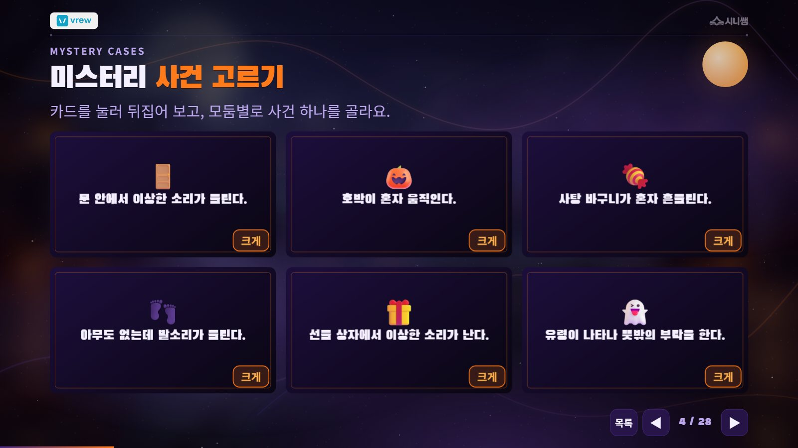
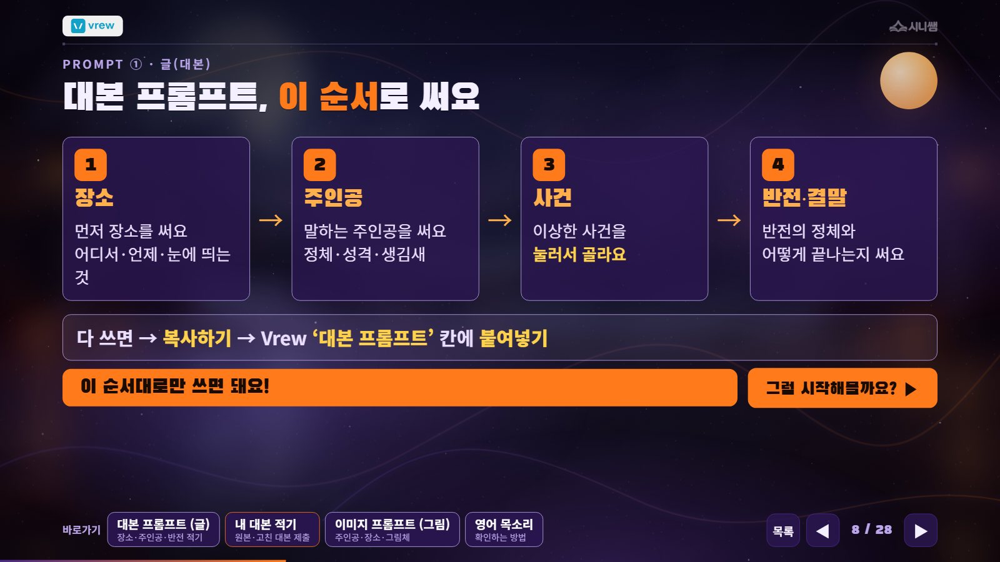
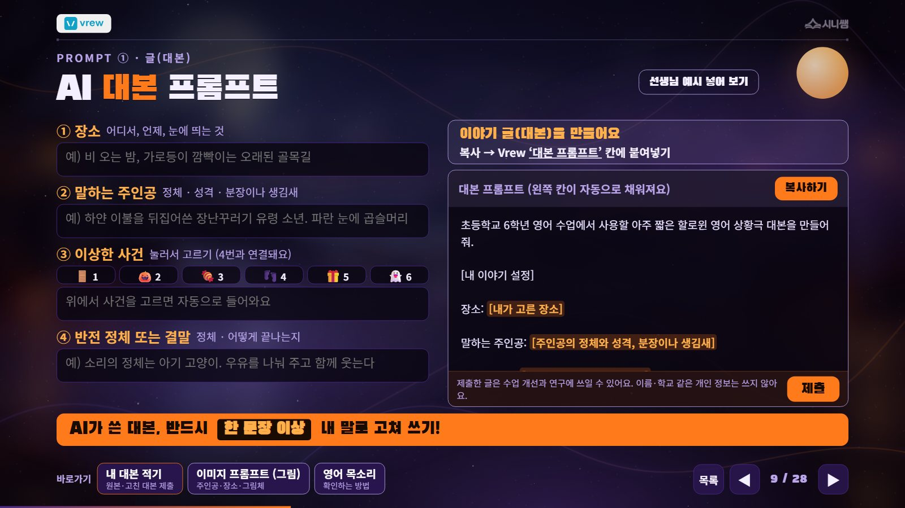
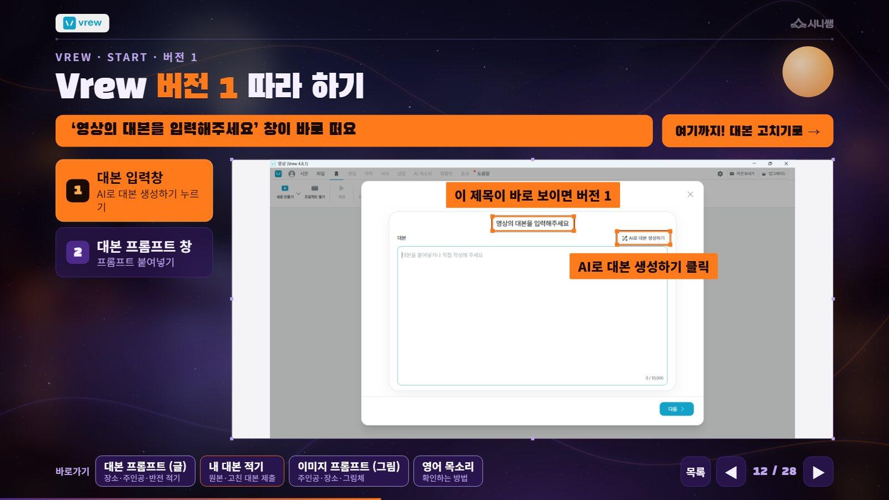
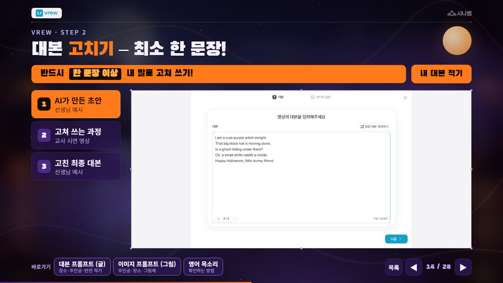
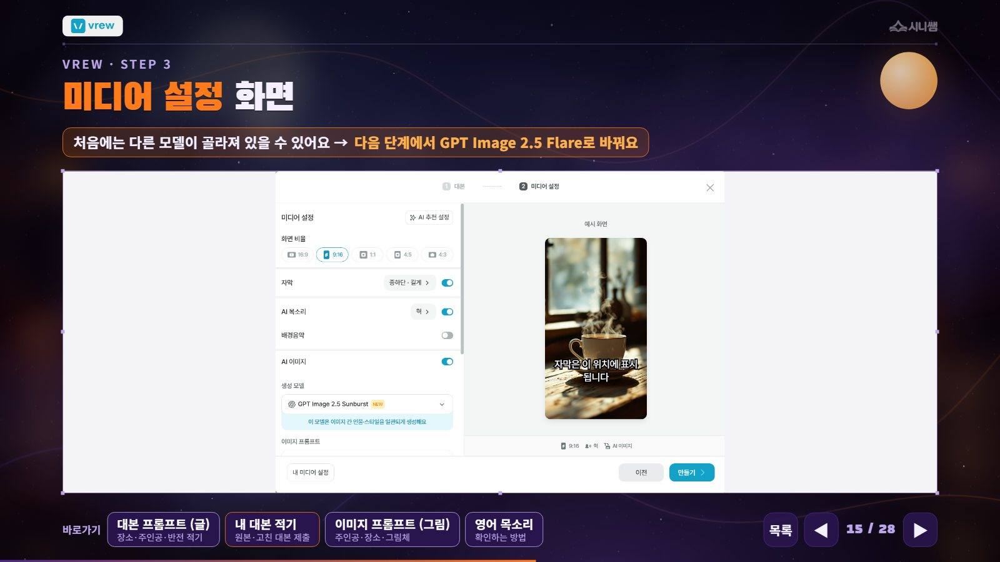
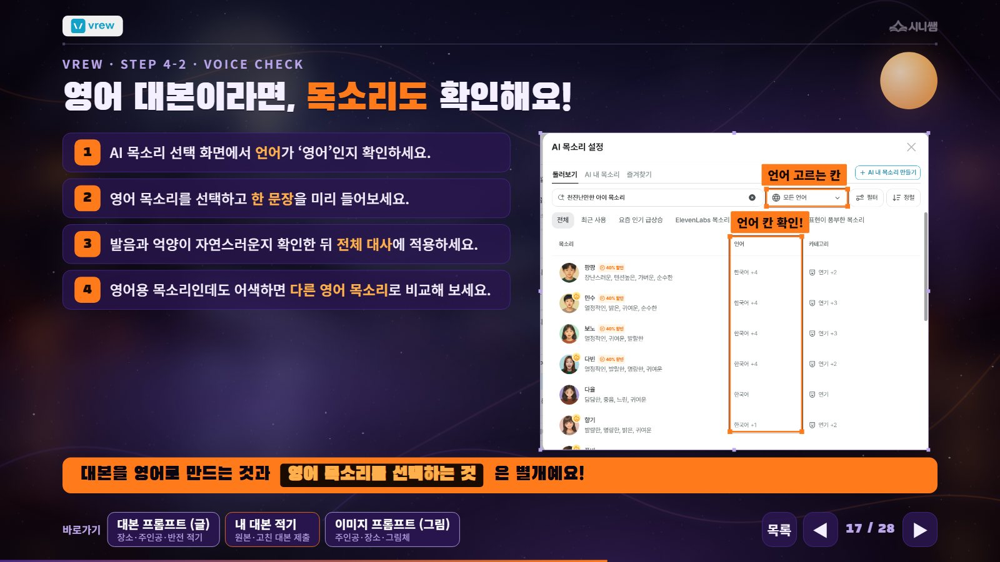
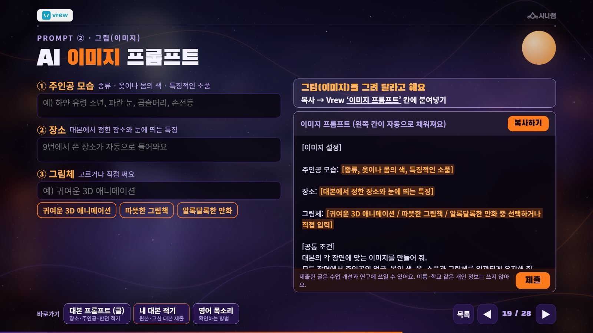
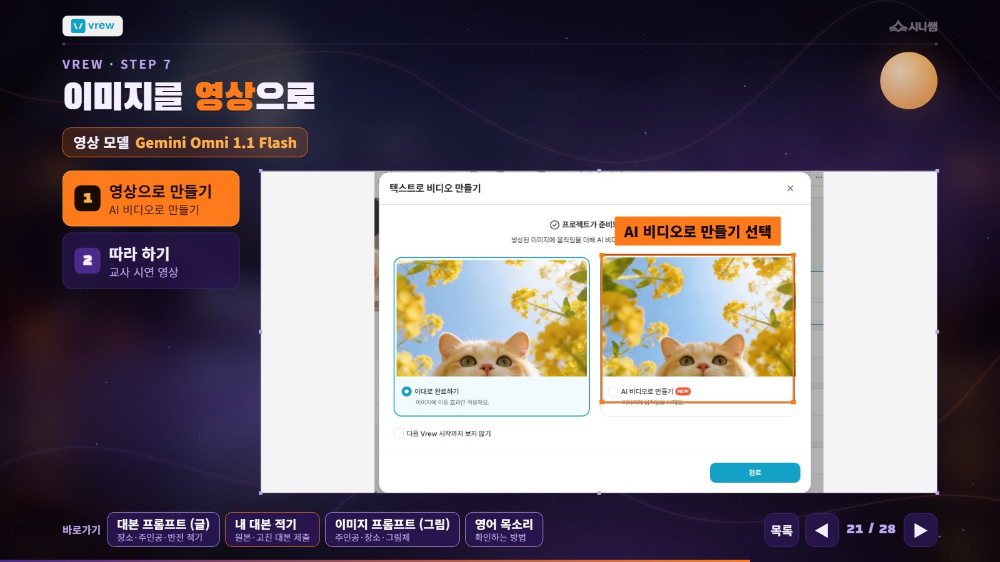
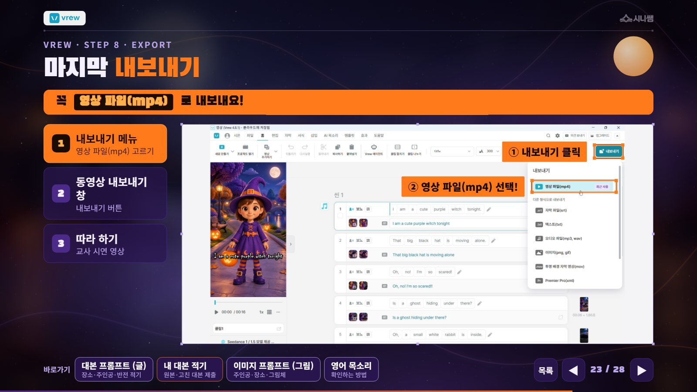
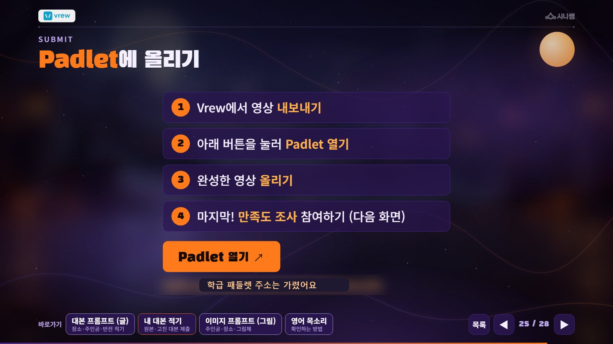
모둠 활동은 사건 고르기뿐, 나머지는 모두 개인. 처음 Vrew를 쓰는 아이들이라 2차시가 빠듯했어요.
In class · 실제 수업 사진 · 영상 · 얼굴은 흐리게
할로윈으로 꾸민 교실, 각자 태블릿으로
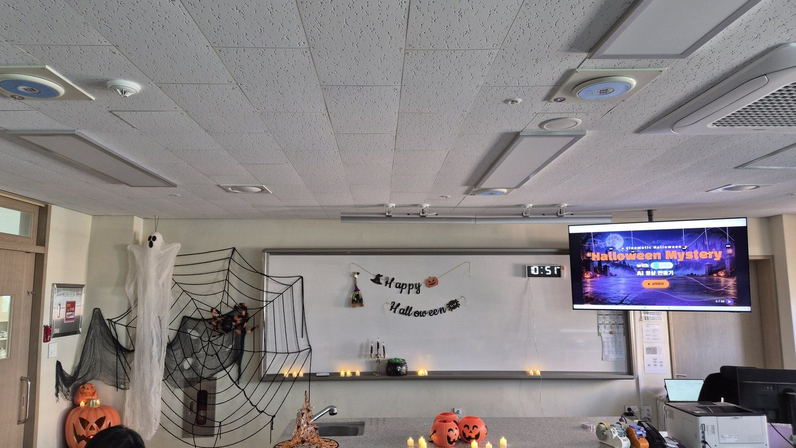
교실 앞 화면에 할로윈 교안 「Halloween Mystery」
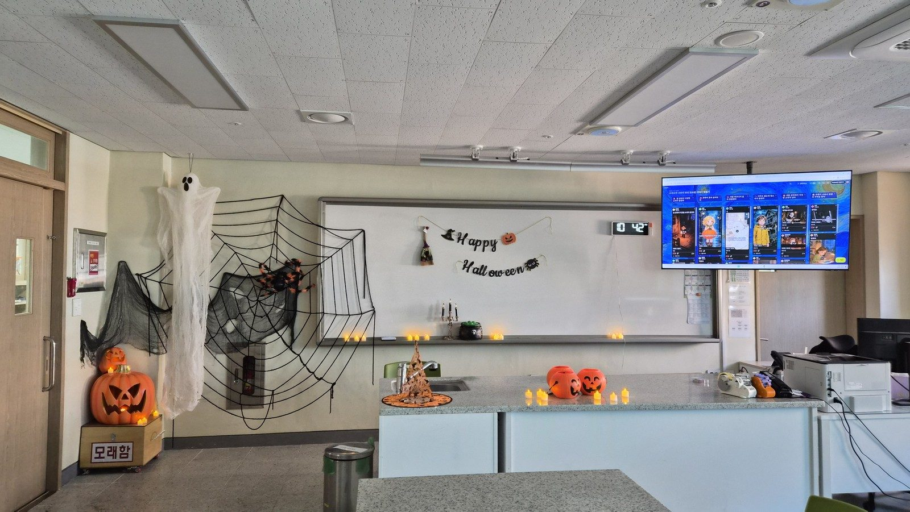
아이들 작품이 올라온 보드를 화면에 띄워 함께 봐요
태블릿 화면 키보드로 교안 칸에 직접 입력
거미줄 · 호박으로 꾸민 교실에서, 아이들은 태블릿으로 교안을 따라 Vrew 영상을 만들었어요.
Student works · 학급 패들렛 영상 54편 중 4편 · 이름은 싣지 않았어요
아이들이 직접 만든 반전 숏츠 4편
발소리 (문 칸에 올림)마녀와 고양이 나비 어깨 위 고양이가 사라지고 “Meow!”
호박이 혼자 움직인다비 맞은 호박 호박이 직접 말하고, 끝은 호박 수프
아무도 없는데 발소리숲속의 마녀 뒤따라온 건 엄마 · 6장면 같은 주인공
유령의 뜻밖의 부탁그림 그리는 아이 유령의 부탁: “같이 그림 그리자”
장면마다 같은 주인공 · 사건 → 긴장 → 반전이 화면에 보임 · 영어 대사가 자막과 목소리로 끝까지 들림.
Where kids got stuck · 교사가 기억하는 세 가지
아이들이 막힌 곳은 세 군데였어요
① 소리 내어 읽고 말하기
AI가 쓴 영어 대사를 소리 내어 읽고 따라 말하기를 어려워했어요.
② 무엇을 넣고, 어디를 고칠지
프롬프트에 무엇을 넣을지, “한 문장 이상 고치기”에서 어디를 고칠지 몰라했어요.
③ 처음 쓰는 Vrew 조작
처음 쓰는 Vrew라 화면 조작에서도 막혔어요. 영어 목소리를 꼼꼼히 들어 보지 않은 영상은 한국어 화자처럼 들렸어요 → 목소리를 영어로 설정하면 훨씬 나아요.
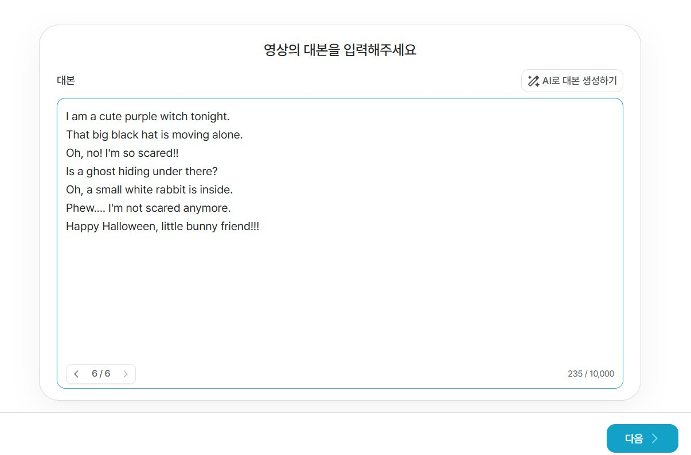
할로윈 교사 시연 대본 — AI 초안 5문장을 교사가 7문장으로 고친 것
What I changed · 다음 수업의 발판
그래서 다음 수업은 이렇게 바꿨어요
할로윈 반전 숏츠
영어 상상 광고제
영어 양
5문장 · 문장당 7단어
4문장 · 문장당 5단어
대본 프롬프트
상황극 대사 · 쉬운 단어 · 현재형
더 쉽고 간단한 문장이 나오게 고침 (초등 3~4학년 단어 · 문장 틀 4줄)
뜻 모를 때
—
영어사전, Gemini for Education을 옆에 켜 두고 도움받기
문장 틀
이야기 대사 (문장마다 다름)
This is my … / It is … / It can … / Try …!
먼저 정할 것
장소 · 주인공 · 사건 · 반전
물건 · 모습 · 능력 한 가지 (한국어로)
고치기 도움
한 문장 이상 고치기
+ ‘이럴 때 이렇게’ 표 · 문법 4줄
주제 범위
상상 이야기
내 책상 위 실제 물건 + 사진 3장
차시 운영
2차시 · 처음 Vrew라 시간이 빠듯
3차시: 1차시 기획 · 2~3차시 제작으로 나눔
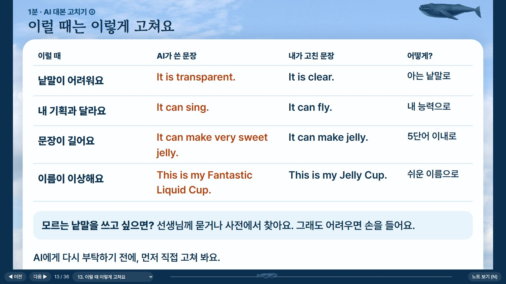
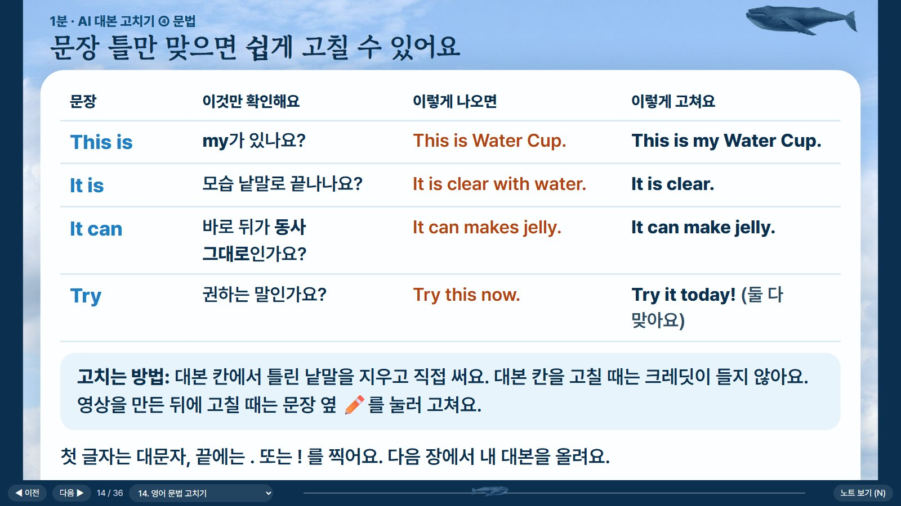
고민 → 시도(할로윈) → 돌아보기 → 다시 설계(광고제). 수업을 고쳐 가는 과정 자체가 오늘 강의의 이야기예요.
수업 사례 ② · 오늘의 핵심
영어 상상 광고제
내 물건에 상상력을 불어넣어 영어 4문장 광고를 완성해요
Lesson 2 · 어떤 수업인가요? · 광고제 원본 교안 기준
내 물건에 능력 하나, “상상을 영어로 팝니다!”
내 책상 위 실제 물건에 상상의 능력 하나를 붙여, 영어 4문장 광고 영상을 만드는 수업이에요.
1차시 · 기획
“오늘은 내 상상 상품 광고를 기획해요”
교사 예시 광고 보기 — “이 컵은 진짜일까요?”
문장 틀 듣고 따라 말하기
물건 · 모습 · 능력 한 가지 · 장면 4개를 한국어로 정하기
2~3차시 · 제작
“어제 쓴 기획으로 Vrew에서 영상을 완성해요”
물건 사진 3장 → 대본 프롬프트 → 대본 확인 · 고치기
세로 · 자막 · 모델 · 영어 목소리 → 이미지 + 사진
AI 비디오 → 내보내기 → 패들렛
영어는 4문장 · 문장당 5단어, 틀은 This is my … / It is … / It can … / Try …! · 약속: 광고 1편 1000 크레딧 이내
Lesson 2 · 수업 소개
내 물건에 능력 하나, 영어 4문장 광고
초등 6학년영어3차시 · 1차시 기획 / 2~3차시 제작개인 활동
지우개It can fly!
우산It can sing.
젤리컵It can make jelly.
곰 인형It can sing a happy song.
교사 예시작은 모두 Vrew로 직접 만들었어요. 네 편 모두 This is my … / It is … / It can … / Try …!
In class · 실제 수업 사진 · 얼굴은 흐리게
제작 차시: “내 상상을 AI 광고로!”
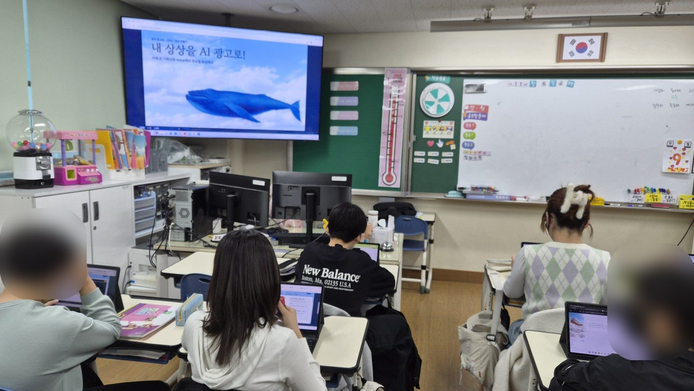
앞 화면: 제작 차시 교안 첫 화면
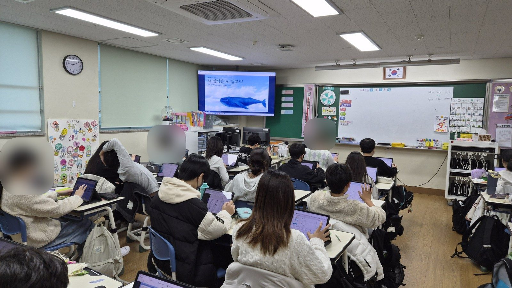
앞 화면의 교안 + 각자의 태블릿
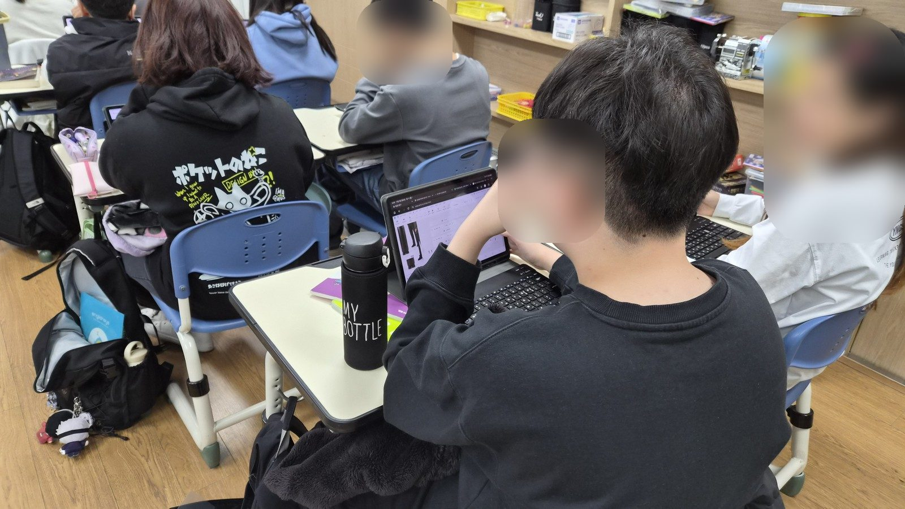
태블릿 키보드로 작업하는 모습
교안 첫 화면 문구: “어제 쓴 기획으로 Vrew에서 영상을 완성해요” — 1차시에 한국어로 쓴 기획을 열고 시작했어요.
In class · 실제 수업 사진 · 영상 · 얼굴은 흐리게
선생님 화면을 보고, 내 태블릿에서 Vrew
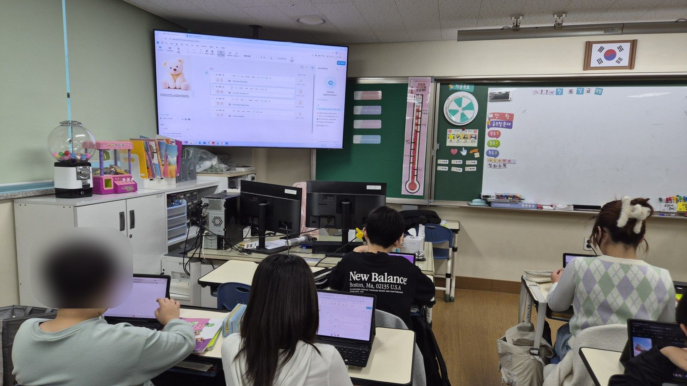
앞 화면: 교사 예시작(곰 인형)의 Vrew 편집 화면
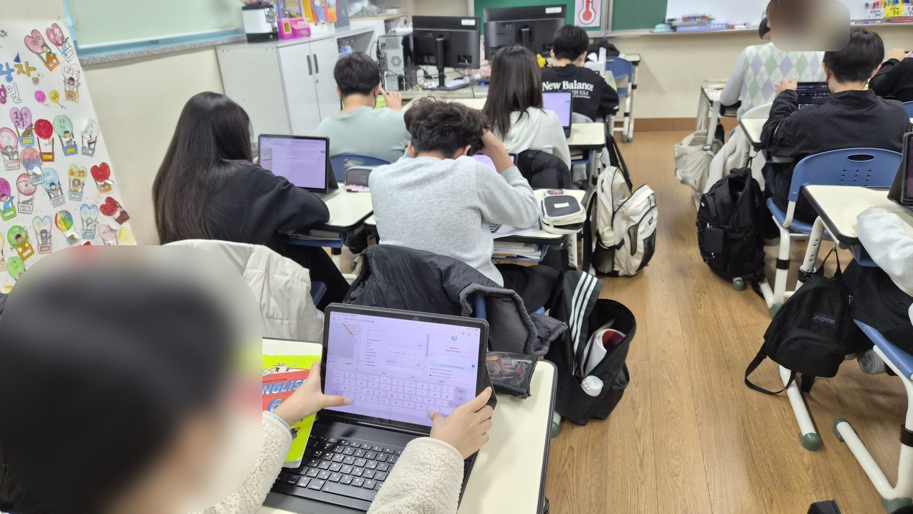
학생 태블릿: Vrew 편집 화면에서 입력
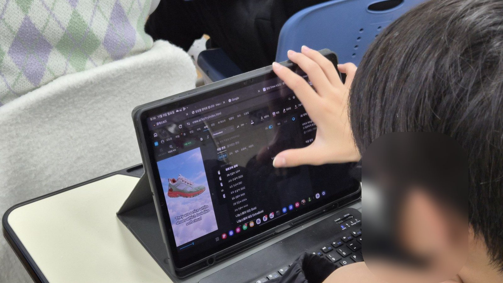
학생 태블릿: 서식 → 자막 글꼴 목록
손가락으로 눌러 가며 작업
교안 22쪽 「선생님 화면을 보고 그대로 따라 해요」처럼, 앞 화면에서 한 번 보여 주고 아이들이 각자 따라 했어요.
1차시 첫 질문 · 웜업 퀴즈
이 컵, 진짜로 찍은 영상일까요?
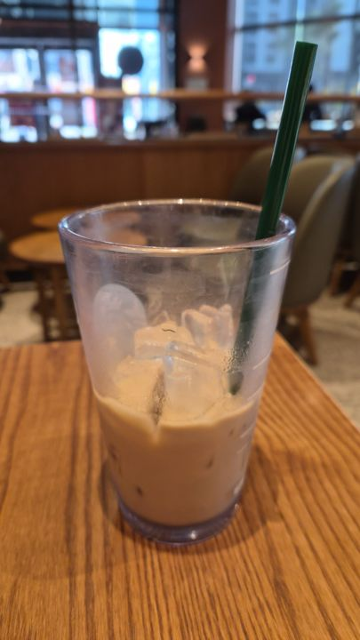
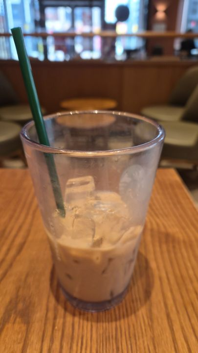
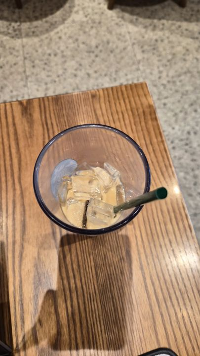
→
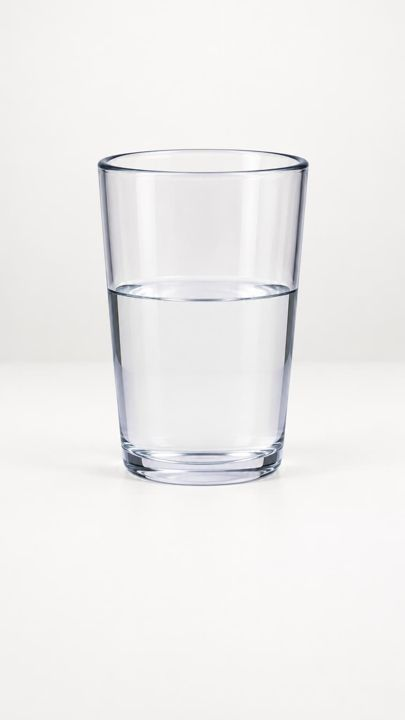
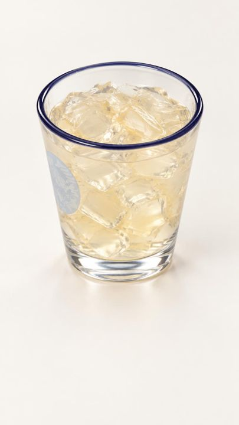
채팅에 ① 또는 ②를 남겨 주세요. 버튼을 누르면 정답이 열려요.
Student works · 1반 패들렛 영상 20편 중 4편 · 이름은 싣지 않았어요
수업 틀 그대로, 영상까지 완성한 광고 4편
마법 연필 This is my magic pencil. / It is a sky blue pencil. / It can draw real things. / Try it now.
마법 립밤 This is my Magic Balm. / It is small and purple. / It can change lip color. / Try it now!
악어 장난감 This is my crocodile toy. / It is small and green. / It can change to a big biting alligator. / Try this fun game now.
걷는 텀블러 This is my blackbot. / It is big and round. / It can walk with me. / Try it now.
This is my · It is · It can · Try 4문장 틀 그대로 · 문장마다 장면 하나 · It can의 능력이 움직이는 영상으로 보여요.
Lesson flow · 3차시 · 6단계
세 시간, 여섯 단계로 만들었어요
아이디어 기획물건 · 모습 · 능력 한 가지 · 장면 4개1차시 · 클래스보드
프롬프트로 대본 구상세 칸 채우면 대본 프롬프트 완성2차시
대본 생성Vrew AI 대본 → 한 문장 이상 내 말로2~3차시 · Vrew
이미지 프롬프트장면 4개 + 물건 사진 3장2차시
이미지 생성9:16 · Low · 자주 → 4장2~3차시 · Vrew
영상 생성AI 비디오 → 길이 맞추기 → mp4 → 패들렛2~3차시 · Vrew
클래스보드 탭 선생님 안내 · 아이디어 모음 · 내가 쓴 최종 대본 · 이미지 프롬프트 · 영상 프롬프트 — 단계마다 결과가 한 탭씩 쌓여요.
Step 1 · 아이디어 기획
광고는 딱 4문장, 상상은 It can …에
문장 틀
뜻
예시
This is my …
이것은 내 …예요.
This is my Jelly Cup.
It is …
이것은 …해요.
It is clear.
It can …
…할 수 있어요.
It can make jelly.
Try …
…해 보세요!
Try it today!
몸으로 맞히기 · It can …
fly · 날다
sing · 노래하다
dance · 춤추다
glow · 빛나다
grow · 커지다
change colors
한 명이 몸으로 표현하면 짝이 It can fly!처럼 맞혀요.
1차시 시작: 교사 예시 광고 → “이 컵은 진짜일까?” → 틀 듣고 따라 말하기 → 능력 카드. 영어는 듣고 말하기만, 쓰기는 다음 시간에.
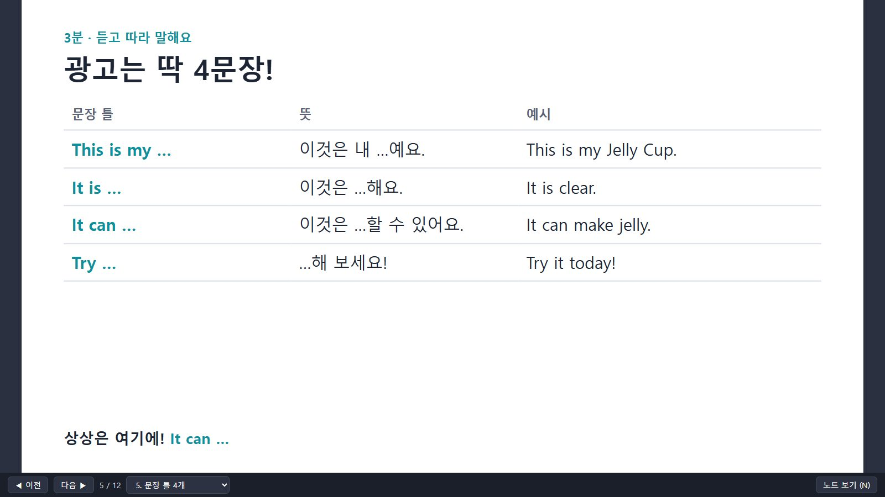
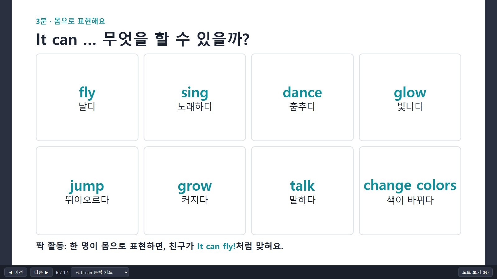
Step 1 · 아이디어 기획
영어는 나중에. 먼저 한국어로 정해요
칸
부족해요
이렇게 써 봐요
물건
내 거
컵
모습
예쁨
투명하고 물이 반쯤 담겨 있음
능력
아주 신기함
물을 담으면 젤리로 변한다
문장
화면에 보이는 모습 · 움직임
This is my …
투명한 컵이 크게 · 카메라가 다가간다
It is …
가까이서 본 컵 · 물이 출렁
It can …
물이 무지개 젤리로 변한다
Try it today!
빛 속에 젤리 가득한 컵 · 반짝
물건은 내일 학교에 가져올 수 있는 것, 로고·이름이 안 보이는 것. 능력은 딱 한 가지, 엉뚱할수록 좋아요.
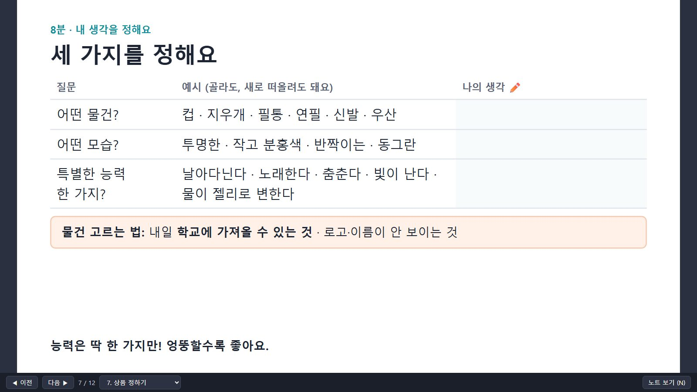
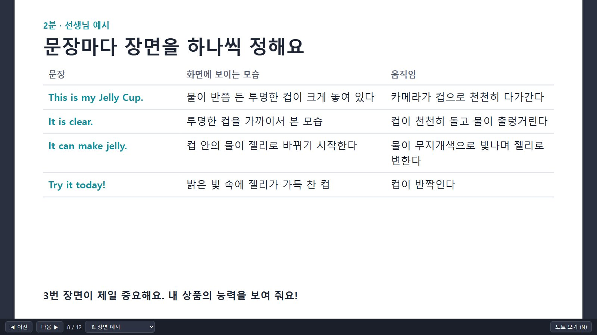
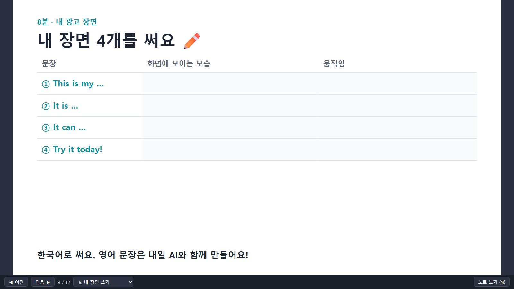
Step 1 · 클래스보드 ‘아이디어 모음’
양식을 복사해 클래스보드에 올려요
1. 어떤 물건?
2. 어떤 모습?
3. 특별한 능력 한 가지?
장면 1 (This is my ...) - 화면에 보이는 모습: / - 움직임:
장면 2 (It is ...) - 화면에 보이는 모습: / - 움직임:
장면 3 (It can ...) - 화면에 보이는 모습: / - 움직임:
장면 4 (Try it today!) - 화면에 보이는 모습: / - 움직임:
내일 가져올 물건:
글 제목 번호 - 내 상품 이름
한국어로 써도 돼요!
다 올린 사람: 친구 글에 댓글 하나 What can it do? 또는 좋았던 점
다음 시간에 이 글을 열어 프롬프트로 옮겨요. 빈칸이 없는지 수업 뒤에 한 번 확인해 두면 제작 차시가 빨라져요.
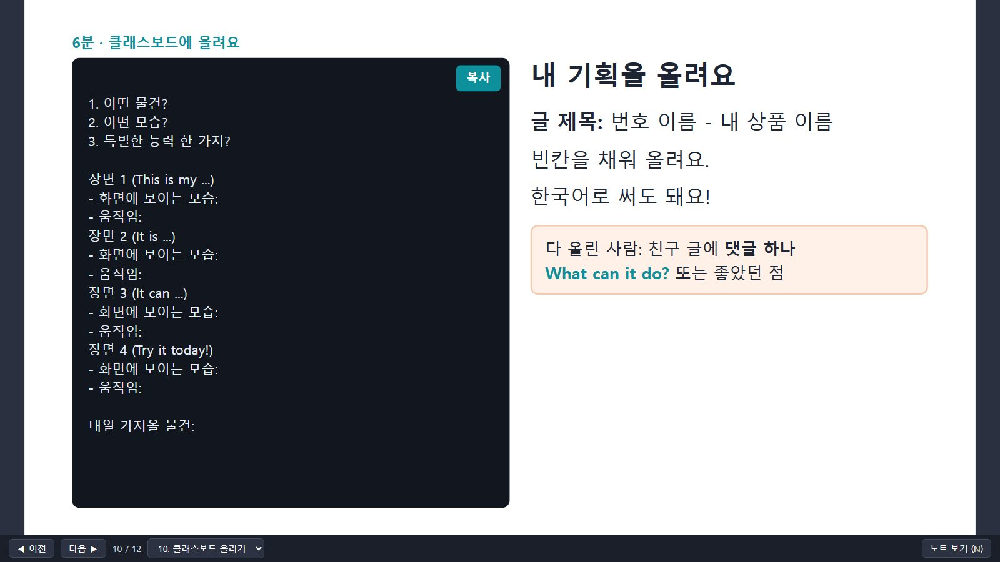
Step 1 · 아이들 기획
능력이 눈에 보이면, 장면이 이어져요
잘된 기획
물고기 볼펜 · “물속에 넣으면 헤엄친다”
물컵 안으로 → 꼬리를 흔들며 헤엄 → 손 쪽으로 다가옴
립밤 · “바르면 입술 색이 변한다”
능력이 한 가지, 사진처럼 그릴 수 있는 장면
막힌 기획
사탕 · “먹으면서 꿈을 생각하면 이루어진다”
장면 3 칸이 비어 있음 → 영상엔 ‘꿈’ 대신 반짝임만
잠바 · “영하 200도에도 따뜻 + 동물 가죽”
능력이 둘, 느낌·생각은 장면으로 못 그려요
교실 팁 “카메라로 찍을 수 있는 동작이야?” — 날아요 · 노래해요 · 색이 바뀌어요 · 커져요
Why prompt · 프롬프트의 중요성 · Gemini for Education
한 줄로 부탁했더니, 빈칸은 AI가 대신 정했어요
한 줄 프롬프트
“금붕어가 나오는 유리병 그림 그려줘”
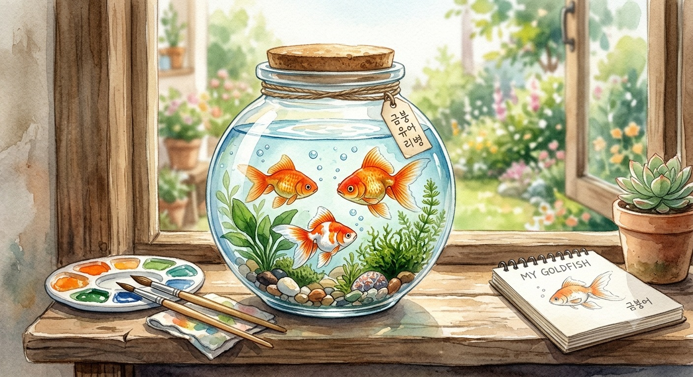
① 가로 화면 — 세로 숏츠에 맞지 않아요
② 금붕어가 병 안에만 — ‘마법 능력’이 보이지 않아요
③ 이름표·‘MY GOLDFISH’ 같은 원치 않은 글자
④ 팔레트·공책 등 소품이 시선을 흩뜨려 주인공이 흐려져요
그럴듯하지만 의도와 동떨어진 그림 — 광고 장면으로 쓰기엔 완성도가 아쉬워요.
네 요소를 채운 프롬프트
[무엇] 금빛 뚜껑이 열린 작은 유리병 · [어떻게] 금붕어들이 헤엄쳐 나와 공중으로 떠올라요 · [어디서] 햇살 드는 민트색 방 · [그림체] 3D 애니메이션 + 세로 9:16, 글자·사람 없이
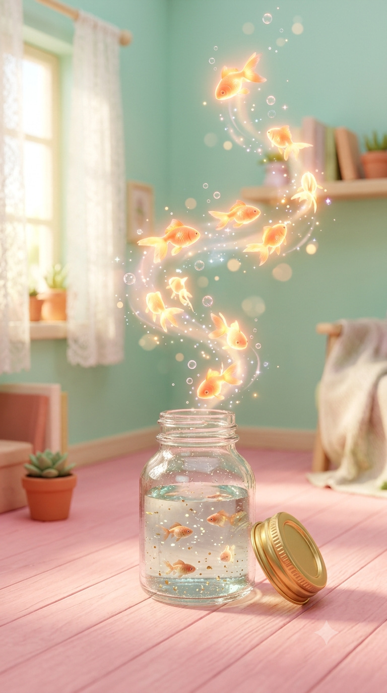
✔ 세로 숏츠 화면
✔ 능력이 한눈에
✔ 글자·군더더기 없음
✔ 병이 주인공
이 비교(한 번씩)에선 빈칸 네 칸을 채우니 의도대로 나왔어요. 프롬프트는 내 의도를 설계하는 글 — 그래서 아이들에게 ‘칸 채우기’부터 가르쳤어요.
Step 2 · 대본 프롬프트
세 칸만 채우면 프롬프트가 저절로
아이들은 1차시 기획을 열어 이 칸에 옮기고 [복사]만 눌렀어요.
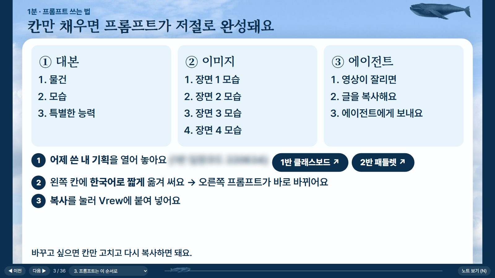
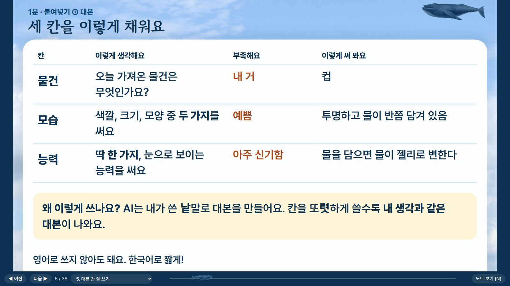
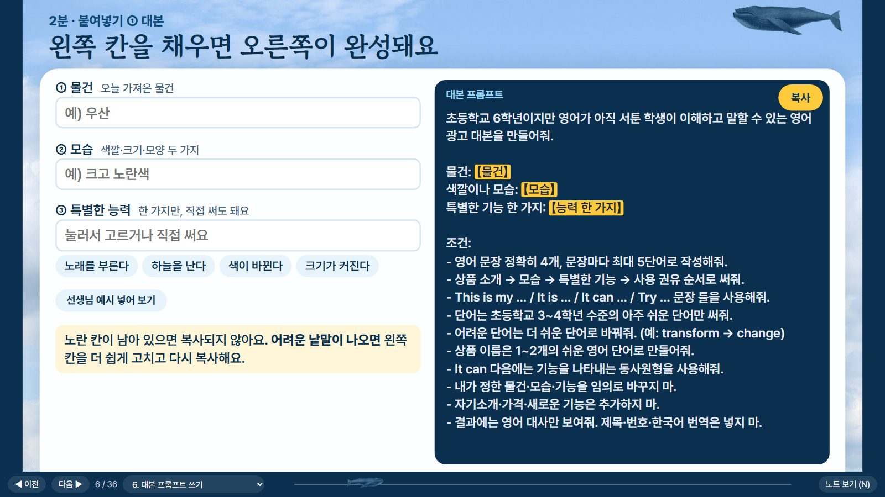
Step 3 · 왜 직접 쓰지 않고 AI로?
직접 쓰지 않고 왜 AI 대본 생성을?
이유 1 · 영어 쓰기의 벽
영어 대본을 처음부터 쓰기는 어려워요
아이들은 영어 대본을 처음부터 쓰기 어려워했어요. 그래서 아이는 한국어로 기획하고, 영어는 읽고 · 고르고 · 고치는 활동으로 바꿨어요.
이유 2 · 비교하며 읽고 고르기
입력을 바꾸면 결과가 바뀌어요
조건을 바꿔 입력해요 (단어 수 · 문장 틀 · 내 기획)
나온 대본을 비교하며 읽어요
더 알맞은 문장을 골라 고쳐 써요
프롬프트 → 대본 과정이 그대로 읽고 · 고르고 · 고쳐 쓰는 영어 활동이 돼요. [6영02-09] 해설의 ‘고쳐 쓰거나 다시 쓰기’ 전략과 이어져요.
Step 3 · 대본 생성
텍스트로 비디오 → AI 대본 생성
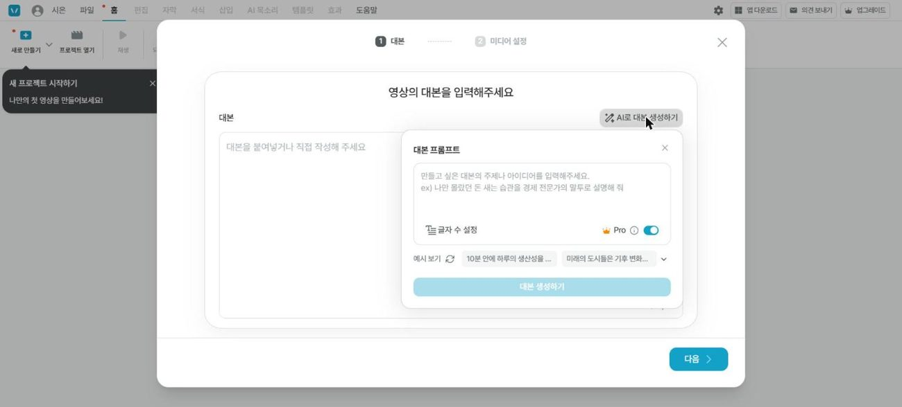
AI로 대본 생성하기 → ‘대본 프롬프트’ 칸에 붙여넣기 → 대본 생성하기
AI가 쓴 대본 (교사 시연 실제)
This is Water Cup. It is clear with water. It can make jelly. Try this now.
대본이 나와도 아직 ‘다음’ 금지! 먼저 고쳐요.
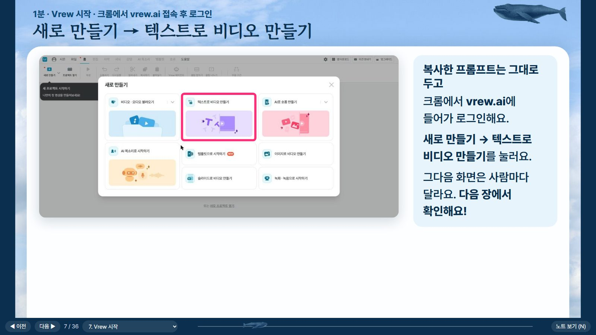
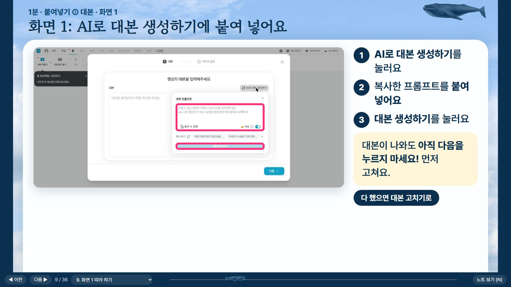
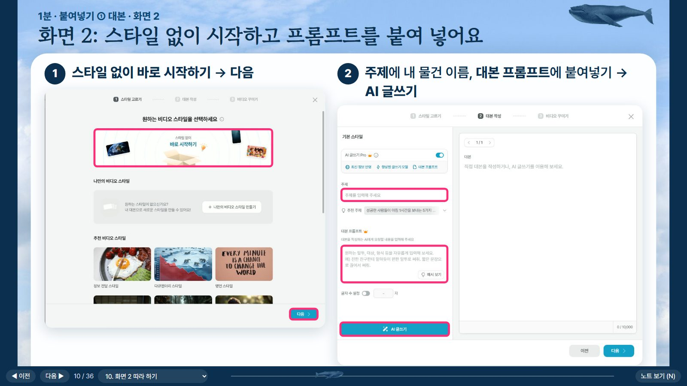
Step 3 · 한 문장 이상 내 말로 · 크레딧 0
AI 대본은 초안, 완성은 내가
고친 대본
This is Water Cup. → This is my Water Cup. It is clear with water. → It is clear.
AI는 제안만 해요. 고르고 · 고치고 · 완성하는 사람은 나예요.수업 내내 이 말을 반복했어요.
이럴 때
AI 문장
내가 고친 문장
낱말이 어려워요
It is transparent.
It is clear.
기획과 달라요
It can sing.
It can fly.
문장이 길어요
It can make very sweet jelly.
It can make jelly.
이름이 이상해요
Fantastic Liquid Cup
Jelly Cup
문법 4줄 This is my · It is + 모습 · It can + 동사 그대로 (makes ✕) · Try …! → 고친 대본은 클래스보드 ‘내가 쓴 최종 대본’ 탭에
초등학교 6학년 영어 수업에서 사용할 아주 짧은 할로윈 영어 상황극 대본을 만들어 줘.
[내 이야기 설정]
장소: 할로윈 밤, 달빛이 비치는 공원
말하는 주인공: 보라색 마녀 옷과 모자를 착용하고 사탕 바구니를 든 아이. 호기심이 많지만 겁이 조금 있다.
이상한 사건: 바닥에 놓인 커다란 검은 마녀 모자가 혼자 통통 움직인다. 아이가 머리에 쓴 모자와는 별개의 모자다.
반전 정체 또는 결말: 검은 모자 아래에 작은 흰 토끼가 숨어 있었다. 아이는 토끼를 발견하고 안심하며 반갑게 말을 건넨다.
[대본 조건]
주인공 한 명이 직접 말하는 영어 대사만 작성해 줘. 다른 캐릭터는 말하지 않아.
정확히 5문장으로, 다음 흐름에 맞춰 작성해 줘.
첫 문장: 주인공이 자신의 정체나 분장을 소개한다.
두 번째 문장: 이상한 사건을 발견하고 반응한다.
세 번째 문장: 놀라거나 궁금해하며 질문한다.
네 번째 문장: 사건의 정체나 반전을 발견한다.
다섯 번째 문장: 재미있거나 따뜻한 말로 마무리한다.
자기소개는 반드시 내가 설정한 주인공에 맞게 작성해 줘. 이름만 말하지 말고 어떤 존재인지 또는 어떤 분장을 했는지 드러내 줘.
배경이나 행동을 설명하는 나레이션은 넣지 마. 주인공이 눈앞의 상황에 반응하며 하는 말로 표현해 줘.
초등학생이 이해하기 쉬운 단어와 현재형 중심의 간단한 문법을 사용해 줘. 특정 인사말이나 표현을 억지로 넣지 마.
문장마다 최대 7단어, 전체 최대 35단어로 제한해 줘.
살짝 오싹하지만 잔인하지 않고, 결말은 재미있거나 따뜻하게 만들어 줘.
[출력 형식]
영어 대사만 정확히 5줄로 출력해 줘.
한 줄에는 한 문장만 써 줘.
인사나 감탄사를 별도 문장으로 덧붙이지 마.
제목, 인물 이름표, 번호, 괄호, 따옴표, 한국어 해석, 행동 설명, 화면 설명, 효과음 표시는 넣지 마.
출력 전에 자기소개 포함 여부, 문장 수와 단어 수를 확인하고, 확인 결과는 출력하지 마.
② AI 생성 결과 1회
② AI 생성 결과 2회
② AI 생성 결과 3회
같은 프롬프트를 3번 넣으니 3번 다 다른 대본이 나왔어요. 1회는 7단어 조건을 3문장이 넘었어요. AI 결과는 확인해야 하는 초안이에요.
Experiment · ② AI 생성 결과 → ③ 한 문장 이상 고친 최종 대본
AI 결과를 내 대본으로 완성하기
회차
② AI 생성 결과 (빨강 = 7단어 초과)
③ 고친 최종 대본 (초록 = 내가 고친 문장)
무엇을 고쳤나
1회
I am a purple witch in this spooky park. 9 Look at that big black hat moving on the ground. 10 Is a real ghost hiding under there? Oh, it is just a cute little white bunny. 9 Happy Halloween, my soft little friend.
I am a purple witch. The black hat is moving! Is a ghost under there? Oh, it is a little white bunny. Happy Halloween, my soft little friend.
7단어가 넘는 문장 3개 → 짧게 줄이기
2회
I am a little purple witch. That big black hat is moving. Is it a scary ghost? Oh, it is a cute white bunny. Happy Halloween, little rabbit.
I am a little purple witch. That big black hat is moving. Is it a scary ghost? Oh, it is a cute white bunny. Do you want some candy?
마무리를 내 말로 → 설정한 사탕 바구니 살리기
3회
I am a cute purple witch. That big black hat is moving. Is it a magic ghost? Oh, it is a little white rabbit. Happy Halloween, little bunny.
I am a cute purple witch. That big black hat is moving. Who is under the hat? Oh, it is a little white rabbit. You scared me, little bunny!
질문과 마무리를 내 말로 → 반전의 느낌 살리기
세 번 모두 한 문장 이상 내 말로. 길이를 줄이고, 설정을 살리고, 반전의 느낌을 더했어요.
Q&A · 짚고 갈 질문
“AI가 써 주면 영어 공부가 되나요?”
AI 초안 제안
→
정하기
한국어 기획에서 무엇을 말할지 정해요
판단하기
조건 · 뜻 · 기획에 맞는지 읽고 판단해요
고치기읽기쓰기
한 문장 이상 내 말로 고쳐 써요
듣기말하기
AI 목소리를 듣고 소리 내어 따라 말해요
AI는 초안을 내놓을 뿐, 고르고 고치고 완성하는 주체는 학습자예요. 영어 공부는 이 네 가지에서 일어나요.
Step 3 · 왜 AI 초안인가
틀이 있으면 고칠 곳이 보여요
틀 프롬프트로 받은 AI 초안 → 단어만 바꿔 고친 대본
This is my crocodile toy. It is small and green. It can bite. Try it today!
아이가 혼자 쓴 문장
막힌 점
틀로 고친다면
It can make person wearing this shoes can walk on the sky
12단어, can 두 번
It can walk on clouds.
It can Erasable
can 뒤가 동사 아님
It can erase everything.
It looks like soft cloud
틀 밖, a 빠짐
It is soft and white.
틀로 받은 초안을 아이가 단어만 바꿔 고친 악어 장난감 대본은 4문장 모두 5단어 이내였어요. 틀 밖으로 나가면 교사가 한 번 봐 주세요.
Step 4 전에 · 미디어 설정 · 교안 16~17쪽
만들기 전에 설정 다섯 가지와 영어 목소리
항목
이렇게 바꿔요 (처음 값 → 우리 반)
화면 비율
16:9 → 9:16 세로
자막
중단 → 중하단 · 짧게 → 길게
생성 모델
Sunburst → GPT Image 2.5 Flare
품질
Low (1장 5 크레딧)
삽입 빈도
자주 (4문장에 4장)
AI 목소리 · 미디어 설정 맨 위
언어 필터를 English로 걸어요
▶ 미리 듣기로 여러 목소리를 들어 봐요
영어가 가장 자연스럽게 들리는 목소리를 골라요
English로 걸러도 ‘한국어 +73’처럼 한국어가 기본인 목소리가 섞여요. 언어 칸만 보지 말고 꼭 들어 보고 골라요.
자막은 반 전체를 중하단 · 길게로 통일했어요. 첫 예시작은 중단 · 짧게라 문장이 조각나 보였어요.
Step 4 · 이미지 프롬프트
장면 4개 + 내 물건 사진 3장
앞 · 옆 · 위. 얼굴·이름·로고 없이, 밝고 단순한 곳에서. 📎 참고 이미지로 3장까지.
첨부한 사진 3장은 같은 물건(물컵)을 앞·옆·위에서 찍은 참고 사진이야.
사진 속 음료·얼음·빨대·배경·로고는 쓰지 말고, 물건의 모양만 참고해서 같은 물건으로 보이게 광고 이미지를 만들어줘.
대본 4문장에 맞춰 이미지를 4장 만들어줘. 문장 하나에 이미지 1장씩이야.
1번 문장: 물이 반쯤 든 투명한 물컵이 앞에 크게 놓인 모습
2번 문장: 투명한 물컵을 가까이서 본 모습
3번 문장: 컵 안의 물이 젤리로 바뀌기 시작하는 모습
4번 문장: 밝은 빛 속에 젤리로 가득 찬 컵
한 이미지에 장면 하나만, 밝고 단순한 배경, 세로 9:16, 아래쪽에 자막 여백.
글자·숫자·가격표·로고·워터마크·사람 얼굴은 넣지 마.
사진 3장 = 네 장면이 같은 물건으로 보이게(일관성). 노란 칸은 1차시 기획의 장면 4개 그대로 → 클래스보드 ‘이미지 프롬프트’ 탭에도 올려요.
Step 5 · 이미지 생성
문장마다 한 장, 네 장의 장면
This is my …
It is …
It can …
앗, 커피?
→
에이전트로 고침
미디어 설정 9:16 · 자막 중하단·길게 · Flare · Low · 삽입 빈도 자주
사진 속 커피가 4번 장면에 남았어요 → “커피색과 얼음은 빼고 무지개 젤리로 바꿔줘”
그래서 사진은 물건만 찍어요. 고치는 말 틀: “【무엇】을 【어떻게】 바꿔줘” — 꼭 필요할 때만(요청마다 크레딧).
Step 6 · 영상 생성
AI 비디오로 만들고, 길이를 맞춰요
프로젝트가 준비되면 AI 비디오로 만들기 → 모델과 금액 확인
장면마다 움직이는 영상 4개 생성
영상이 목소리 길이만큼만 나오면 에이전트에게 “각 클립 길이를 그 AI 영상 길이만큼 늘려 줘. 나레이션 뒤에 무음을 넣어서”
영상 아래 시간 20초 안팎 확인 (확장 30초까지)
내보내기 → mp4 → 패들렛
에이전트 답
Step 6 · 영상 길이 맞추기 · 교안 24~26쪽
영상이 짧게 잘리면 에이전트에게 부탁
클립마다 들어 있는 AI 영상이 끝까지 재생되도록, 각 클립의 길이를 그 AI 영상 길이만큼 늘려 줘. 나레이션 뒤에 무음 구간을 넣어서 늘려 줘.
교사 예시작 때 보낸 글: “지금 동영상은 3초짜리로 만들었는데 … 나레이션 뒤에 무음 구간을 좀 넣어서 만들어진 영상이 다 재생되게 하고 싶어.” → 오른쪽 대답
재생해 보고 너무 빨리 넘어갈 때만 보내요. 에이전트는 크레딧이 들어요.
클립
기존 길이
더한 무음
지금 길이
1
1.75초
1.25초
3초
2
2.19초
0.81초
3초
3
1.97초
1.03초
3초
4
1.56초
1.44초
3초
교사 예시작에서 받은 에이전트 대답 · 전체 7.47초 → 12초. 대본 길이가 다르면 숫자도 달라요.
성공 확인: 영상 아래 시간 00:12 · 문장마다 움직이는 영상 · 말이 끝난 뒤에도 영상이 이어져요.
Step 6 · 자막 · 교안 27~28쪽
자막 글꼴은 서식에서 바꿔요
고칠 클립을 눌러요
위쪽 메뉴에서 서식을 눌러요
글꼴 칸을 눌러 무료 폰트를 골라요
크기 · 테두리 · 형광펜 · 위치도 같은 줄에 있어요
시간이 남으면 · 한꺼번에
서식: 클립을 모두 선택 → 형광펜 색 위치: 위치 메뉴에서 위아래 조절
실제 수업: 학생 태블릿에서 서식 → 글꼴 목록을 연 화면
바쁘면 건너뛰어요. 내보내기가 먼저! 자막 위치 · 길이는 미디어 설정에서 이미 맞춰 두었어요.
Step 6 · 마무리 · 교안 29~32쪽
체크하고 → mp4로 내보내고 → 패들렛
① 최종 체크
☐ 대본이 4문장이고 뜻을 알아요 ☐ 문법을 표로 확인했어요 ☐ 프롬프트나 대본을 한 번 이상 고쳤어요 ☐ 영어 목소리를 직접 들었어요 ☐ 끝까지 재생해 봤어요 ☐ 쓴 크레딧이 1000 이내예요
② 내보내기
내보내기 → 영상 파일(mp4) → 내보내기 누르고 기다리기
저장된 곳을 기억해요. 다음에 패들렛에 올려요!
③ 패들렛
글 제목: 번호 - 상품 이름 내가 고른 영어 한 문장 · 뜻 또는 고친 곳과 이유 친구에게: What can it do? It can ___.
막히면 다시 만들기 전에 먼저 손 들기. 영상이 안 되면 이미지 그대로 완성해도 돼요. (교안 30쪽)
Kids' work · 여섯 단계를 지나 완성
기획 한 줄이 광고 한 편이 되기까지
① 기획 (한국어)
물건: 연필 · 모습: 평범한 연필 능력: 그린 게 실제로 나온다
→
③ 대본 (영상 속 영어)
This is my magic pencil. It is a sky blue pencil. It can draw real things. Try it now!
→
⑥ 학생 영상 · 15초
그린 곰이 진짜 곰 인형이 되는 장면이 It can draw real things.와 딱 맞아요.
Kids' videos · 잘된 점 · 아쉬운 점
짧고 정확한 영어 vs 길고 화려한 영어
틀을 지킨 광고 · 아이가 읽고 말할 수 있어요
립밤It can change lip color.
물통 로봇It can walk with me.
AI 문장이 그대로 · 멋지지만 읽지 못해요
아기 악어…grow big in water day by day.
마법 사탕…full of colorful star patterns.
그래서 ③에서 올리기 전 교사가 한 번 봐 주는 단계가 필요해요. 오늘 실습도 왼쪽 기준(4문장 · 5단어).
Kids' revisions · 고칠 기회가 있으면
고칠 기회가 있으니 스스로 고친 아이가 있었어요
처음 올린 영상6초 · 장면이 휙 지나가요
→
스스로 다시 올린 ‘수정본’12초 · 장면이 다 보여요
영어도 고쳤어요
지우개 기획의 It is ugly. → 영상에서는 It is clean.
지우개It can fly high.
영상이 짧게 잘리는 건 ⑥의 ‘클립 길이’ 문제 — 실습 「영상이 짧게 잘리는 이유」 장에서 고치는 법을 같이 봐요.
Sharing · 패들렛 댓글
아이들끼리 신나서 서로 묻고 답했어요
응원 댓글
👏 “짝짝짝”
친구 영상마다 박수와 응원이 가득.
서로 묻고 답한 댓글
악어 장난감에 “물렸을 때 느낌 어때요?”
“장난감 모습이 다르게 보일 때가 끝부분에 다를 때가 있는데 그거만 수정해 주시면 완벽할 것 같네요”
샤프 광고에 “날아가면 어떻게 돌아와요?”
아이들끼리 신나서 서로 묻고 답하며 상호작용이 원활하게 잘 됐어요. 오늘도 질문 틀 What can it do?로 서로 묻고 답해 봐요.
Take away
내 교실에 옮길 때 남길 세 가지
1
한국어 기획 먼저
물건 · 모습 · 능력 한 가지. 영어는 그다음.
2
고르는 영어
4문장 틀 + 5단어. AI 문장을 판단하고 고쳐요.
3
단계마다 보드에
과정은 클래스보드, 영상은 패들렛. 친구 글에 질문 하나.
→ 이제 같은 흐름을 Vrew에서 같이 만들어 봐요. 크롬에서 vrew.ai를 열어 두세요!
실습 ①
Vrew 처음부터, 같이 한 편 ①
접속 → 대본 → 고치기 → 설정 → 만들기 강사가 먼저 보여 드리면 → 바로 따라 해요
Vrew · Step 0 · 브레인스토밍 · 클래스보드에 올리기
실습 전에, 내 광고 아이디어부터
물건:
모습 (색깔·모양):
능력 (눈에 보이는 특별한 기능 한 가지):
장소·빛:
그림체:
한 줄 광고:
누르면 양식이 복사되고 클래스보드가 열려요 → 「💡 광고 아이디어」 칸 + → 붙여넣기(Ctrl+V) → 칸 채우고 올리기
예시
물건: 컵 · 모습: 하얗고 작음 능력: 아이스크림을 만든다 장소·빛: 햇살이 드는 부엌 탁자 위 그림체: 3D 애니메이션, 파스텔 색감 한 줄 광고: 아이스크림을 만드는 하얀 컵
능력은 눈에 보이는 동작으로: ✗ 맛있다 → ✓ 컵에서 아이스크림이 솟아오른다 영상으로 보여 주기 쉬운 능력: fly · sing · dance · glow · grow · change colors
💡 2분 동안 오늘 만들 광고 아이디어를 클래스보드에 올려요. 다른 선생님 아이디어도 보고 떠오르는 대로 고쳐도 돼요. 이 다섯 칸이 그대로 대본·이미지 프롬프트에 들어가요.
Image models · Vrew AI 이미지 · 생성 모델 메뉴 (11/17 기준 · Vrew 4.9.1)
Vrew 이미지 모델 9종
AI 이미지 → 생성 모델 → 더보기
모델 · 만든 곳
Vrew 소개
품질
1장(Low)
제공 기한
GPT Image 2.6 FlareOpenAI · NEW
11월 새 모델 · 2.5 Flare의 다음 버전
★★★★★
10
공지 없음
GPT Image 2.6 SunburstOpenAI · NEW
11월 새 모델 · 2.5 Sunburst의 다음 버전
★★★★★
10
공지 없음
GPT Image 2.5 FlareOpenAI · 오늘 사용
빠르게 여러 구도 비교 · 연수 통일
★★★★★
5
공지 없음
GPT Image 2.5 SunburstOpenAI
글자·소품·배치 조건에 강함 · Vrew 기본
★★★★★
5
공지 없음
Nano Banana 2.1Google
글자 표현 · 인물 일관성
★★★★★
15
공지 없음
Muse ImageMeta
참고 이미지 여러 장 조합 · 그림체 바꾸기
★★★★★
5
공지 없음
GPT Image 2OpenAI
사진풍 장면 · 일러스트 범용
★★★★★
5
공지 없음
Seedream 4.5ByteDance
인물·상품 · 조명과 색감
★★★★★
10
공지 없음
FLUX.2 kleinBlack Forest Labs
풍경·사물·배경 · 가장 저렴 · 참고 이미지 첨부 안 됨
★★★★★
1
공지 없음
11월에 GPT Image 2.6 Flare · Sunburst(NEW, 1장 10)가 새로 들어와 9종이에요. 이번 연수는 GPT Image 2.5 Flare(1장 5)로 통일해요. 이미 사라진 모델: Flux 1.1 Pro · Flux 1 Dev(9/30), SDXL(10/31).
Image models · 4장 중 3번째 이미지 · 1장 크레딧 · 느낌
이미지 모델 7종, 같은 프롬프트
GPT Image 2.5 Sunburst 5크레딧 · 눈이 큰 귀여운 3D 4장이 같은 병 → 초등 광고 기본
GPT Image 2.5 Flare 5크레딧 · 차분한 3D · 빠름 다시 뽑으니 병 모양이 바뀜 → 깔끔한 제품 광고
Video models · Vrew AI 비디오 · 생성 모델 메뉴 (11/17 기준 · Vrew 4.9.1)
Vrew 영상 모델 9종
AI 비디오 → 생성 모델 → 더보기
모델 · 만든 곳
Vrew 소개
길이 · 화질
소리
품질
크레딧 할인/정가 5초 720p · Veo 4초 · *1080p
Seedance 2.5ByteDance
참고 이미지 정교 반영 · 최고 성능
4–30초720p·1080p
○
★★★★★
450 / 750
Seedance 2.0ByteDance
디테일까지 고화질
4–15초720p·1080p
○
★★★★★
300 / 500
Seedance 2.0 FastByteDance
품질과 속도의 균형
4–15초720p
○
★★★★★
250 / 400
Gemini Omni 1.2 FlashGoogle · NEW · 오늘 사용
11월에 1.1에서 바뀜 · 가성비 · 연수 통일
3–15초720p · 종료 이미지 넣으면 10초까지
○
★★★★★
175 / 300
Kling v3Kuaishou
자연스럽고 역동적인 움직임
3–15초720p·1080p
✕
★★★★★
300 / 450
Seedance 2.0 MiniByteDance
빠르고 가벼운 생성
4–15초720p
○
★★★★★
150 / 250
Veo 3.1Google
영화 같은 연출
4·6·8초720p·1080p
○
★★★★★
640 / 960*
Veo 3.1 FastGoogle
빠른 시네마틱
4·6·8초720p·1080p
○
★★★★★
200 / 300
Veo 3.1 LiteGoogle
부담 없는 Veo
4·6·8초720p·1080p
○
★★★★★
120 / 200
11월에 Gemini Omni 1.1 Flash → 1.2 Flash로 바뀌었어요(가격 같음 · 1초 35). 이번 연수는 Gemini Omni 1.2 Flash로 통일해요. 이미 사라진 모델: Seedance 1 Pro Fast · 1.5 Pro(10/31).
Video models · 같은 시작 이미지 · 같은 움직임 한 줄 · 할인가
영상 모델 9종, 움직임이 달라요
Veo 3.1 Lite 120 · 4초 병 위에서 맴돎 · 화면 안에 머묾 → 가장 저렴
Seedance 2.0 Mini 150 · 5초 화면 위로 빠져나감 · 물방울 → 저렴·빠름
Gemini Omni 1.1 Flash (지금은 1.2 Flash) 175 · 5초 모양이 안정적 · 맴돌다 다시 모임 → 수업 추천
Veo 3.1 Fast 200 · 4초 천천히 떠다님 → 차분한 장면
Seedance 2.0 Fast 250 · 5초 위로 빠져나감 · 물방울 많음 → 역동적인 장면
Seedance 2.0 300 · 5초 반짝이 꼬리 · 720p → 반짝이는 장면
Kling v3 300 · 5초 움직임이 가장 큼 → 큰 동작
Veo 3.1 640 · 4초·1080p 반짝임 많고 화질 최고 → 최고 화질 (가장 비쌈)
Seedance 2.5 450 · 5초 금붕어 모양이 가장 또렷 · 최대 30초 → 긴 영상
수업엔 Gemini Omni 1.2 Flash(1.1의 새 버전 · 안정적), 싸게는 Veo 3.1 Lite. Seedance 2.0·Fast·Mini는 금붕어가 화면 위로, Kling은 움직임이 가장 커요. Seedance 2.5는 금붕어 모양이 가장 또렷해요(450). 설정 ‘오디오’가 기본 ‘켜짐’이라 9개 모두 효과음이 같이 들어왔어요 — 끄고 만든 Veo 3.1 Lite는 소리가 없었고, Veo·Kling은 끄면 크레딧도 줄어요(11/15).
Today's flow · 여덟 단계
실습 흐름 한눈에
이 순서대로만 따라 하면 영상 완성! 프롬프트는 두 번, Vrew에 붙여넣어요.
01접속 · 새로 만들기vrew.ai
02대본 프롬프트프롬프트 ① 붙여넣기
03대본 고치기4문장 · 한 낱말
04설정 · 이미지 프롬프트프롬프트 ② 붙여넣기
05만들기‘AI 비디오로 만들기’ 선택 → 누르고 휴식
06편집문장 · 목소리 · 자막
07내보내기mp4 저장
08공유클래스보드 · 패들렛
붙여넣기 ①
Vrew ‘대본 프롬프트’ 칸에
→ AI가 영어 대본 4문장을 써 줘요
붙여넣기 ②
Vrew ‘이미지 프롬프트’ 칸에
→ AI가 장면 그림 4장을 그려 줘요
프롬프트는 대본 칸이 아니라 ‘대본 프롬프트’ 칸에! 막히면 채팅에 ✋. 영상으로 만들고 싶은 이미지는 골라서 AI 비디오로.
Today's setting · 실습 내내 이 장만 보면 돼요 · Vrew 4.9.1 · 11/17 기준
이번 연수 기준 한 장
항목
이번 연수는 이렇게 통일해요
크레딧
화면
9:16 세로 · 자막 중하단 · 길게 · 삽입 빈도 자주 (4문장에 4장)
—
이미지
GPT Image 2.5 Flare · 품질 Low · 미디어 설정에서 고르기
1장 5 · 4장 약 20
영상 (선택)
Gemini Omni 1.2 Flash · 움직이고 싶은 장면만 · 시작 이미지 = 그 장면
4초 140 · 5초 175
목소리
언어 필터 English → ▶ 미리 듣기 → 영어가 가장 자연스러운 목소리
애덤 100자당 1
고치기
AI 대본에서 한 문장 이상 내 말로 고치기 · 4문장 · 문장당 7단어 이내
—
제출
내보내기 mp4 → 연수 갤러리에 영상 → 클래스보드에 글 (97 · 102장 버튼)
—
광고 1편 예상: 이미지만 약 20 · 한 장면 움직이면 +140 · 네 장면 모두면 약 580. 생성 버튼의 표시 금액을 먼저 확인하고 눌러요.
Vrew · Step 1 · 접속
새로 만들기 → 텍스트로 비디오
교사 녹화 · 새로 만들기 → 텍스트로 비디오 만들기 → 대본 창
크롬에서 vrew.ai → 로그인
첫 화면 새로 만들기
텍스트로 비디오 만들기
‘스타일 고르기’가 먼저 뜨면 → 스타일 없이 바로 시작하기
✅ ‘영상의 대본을 입력해주세요’ 또는 ‘주제 / 대본 프롬프트’ 창이 보이면 성공!
Vrew · Step 1 · 두 가지 화면
Vrew 화면이 두 가지로 떠요. 내 화면은?
화면 1 ‘영상의 대본을 입력해주세요’ → AI로 대본 생성하기
화면 2 ‘원하는 비디오 스타일을 선택하세요’ → 스타일 없이 바로 시작
Vrew · Step 2 · 대본
대본 프롬프트 만들기
화면 1 AI로 대본 생성하기 → 대본 프롬프트 칸 → 대본 생성하기 화면 2 주제에 물건 이름 + 대본 프롬프트 칸 → AI 글쓰기
Vrew · Step 2 · 프롬프트 한 줄씩
대본 프롬프트, 한 줄씩 뜯어보기
프롬프트의 줄
이 줄이 정하는 것
초등학교 6학년이지만 영어가 아직 서툰 학생이 이해하고 말할 수 있는 영어 광고 대본
누가 읽고 말할 대본인지
물건 · 색깔이나 모습 · 특별한 기능 한 가지 (내가 채운 세 칸)
내용 — AI는 이 낱말로 대본을 만들어요
영어 문장 정확히 4개, 문장마다 최대 5단어
영어의 양
상품 소개 → 모습 → 특별한 기능 → 사용 권유 · This is my … / It is … / It can … / Try …
문장 순서와 틀
초등학교 3~4학년 수준의 아주 쉬운 단어 · 상품 이름은 쉬운 영어 1~2단어 · It can 다음 동사원형
낱말 수준과 문법
내가 정한 물건·모습·기능을 바꾸지 마 · 자기소개·가격·새로운 기능은 추가하지 마
내 생각을 지키기
영어 대사만 · 제목·번호·한국어 번역은 넣지 마
결과의 모양
세 칸은 또렷하게: 내 거 → 컵 · 예쁨 → 투명하고 물이 반쯤 담겨 있음 · 아주 신기함 → 물을 담으면 젤리로 변한다 (광고제 교안 5쪽)
Vrew · Step 2 · 붙여넣기 · 화면 1 · ‘영상의 대본을 입력해주세요’
화면 1: AI로 대본 생성하기에 붙여 넣어요
오른쪽 위 AI로 대본 생성하기 클릭
대본 프롬프트 칸에 복사한 프롬프트 붙여넣기 (Ctrl + V)
대본 생성하기 클릭
큰 ‘대본’ 칸이 아니라 작은 창의 ‘대본 프롬프트’ 칸이에요. 대본이 나오면 다음은 아직 — 먼저 고쳐요.
‘원하는 비디오 스타일을 선택하세요’가 떴다면 → 다음 장 (화면 2)
Vrew · Step 2 · 붙여넣기 · 화면 2 · ‘원하는 비디오 스타일을 선택하세요’
화면 2: 스타일 없이 시작하고 붙여 넣어요
① 스타일 고르기
② 대본 작성
스타일 없이 바로 시작하기
다음
주제에 내 물건 이름 (예: 컵)
대본 프롬프트에 붙여넣기
AI 글쓰기
오른쪽 ‘대본’ 칸에 영어 4문장이 나오면 성공. 고친 다음에 다음을 눌러요.
Vrew · Step 3 · 고치기 · 크레딧 0
소리 내어 읽고, 한 낱말은 내 말로
틀
교사 시연 예
뜻
This is my ___.
This is my Snack Cup.
내 스낵 컵이에요.
It is ___.
It is small and white.
작고 하얀색이에요.
It can ___.
It can make ice cream.
아이스크림을 만들어요.
Try ___!
Try it today!
오늘 써 보세요!
소리 내어 읽고 뜻 확인
4문장 · 5단어 이내
번호·한국어가 섞였으면 지우기
낱말 하나 직접 고치기 → 다음
대본 칸에서 고치면 크레딧이 들지 않아요.
Vrew · Step 4 · 미디어 설정 · 대본을 고치고 ‘다음’을 누르면 나와요
미디어 설정, 다섯 군데만 바꿔요
화면 비율 → 9:16 세로
자막 → 중하단 · 길게
AI 목소리 → 영어 목소리
배경음악 → 골라도, 꺼도 OK
생성 모델 → GPT Image 2.5 Flare
이번 연수는 모델을 모두 통일해요 · 이미지 GPT Image 2.5 Flare · 영상 Gemini Omni 1.2 Flash
Vrew · Step 4 · 미디어 설정 ① ②
9:16 세로, 자막은 중하단 · 길게
화면 비율 9:16 클릭 (맨 처음에!)
자막 줄 오른쪽 칸 클릭 → 작은 창
위치 중하단
길이 길게 → ✕로 닫기
처음 화면이 16:9 가로일 수 있어요. 수업에서도 가로로 나와 버린 영상이 있었어요.
Vrew · Step 4 · 미디어 설정 ③
AI 목소리는 미디어 설정에서 열어요
① AI 목소리 줄의 목소리 이름 (예: 애덤 ›) 클릭
→
‘AI 목소리 설정’ 창이 열려요
창이 열리면 다음 장에서 영어 목소리를 골라요.
Vrew · Step 4 · AI 목소리 · 만들기 전 (미디어 설정)
AI 목소리 선택하기: 영어 목소리로
미디어 설정 맨 위 「AI 목소리」를 누르면 열리는 창 · 광고제 제작 차시 수업 화면
미디어 설정 맨 위 AI 목소리 칸 클릭
언어 필터를 English로
▶ 미리 듣기로 여러 목소리를 들어 보기
영어가 가장 자연스러운 목소리 고르기 (언어 칸이 ‘영어’로 시작하는 목소리가 대체로 자연스러워요 · 예: 애덤 영어 +27)
목소리마다 특징(밝은·중저음·느린 등)과 크레딧(예: 애덤 100자당 1)이 달라요. 검색창에 한국어로 느낌을 쓰면 한국어 목소리가 먼저 나왔어요(11/13) — 영어는 필터로.
💡 수업 팁 · 할로윈 수업에서도 영어 목소리를 확인하지 않은 영상은 한국어 화자처럼 들리기도 했어요. 직접 들어 보는 과정이 필요해요.
Vrew · Step 4 · 미디어 설정 ⑤ · AI 이미지
AI 이미지: Flare · Low · 자주
생성 모델 → GPT Image 2.5 Flare
품질 Low(1장 5크레딧)
무료 비디오 끔
삽입 빈도 자주
미디어 설정을 아래로 내리면 보여요 · 모델 이름·크레딧은 당일 화면 기준
Design concepts · Vrew AI 이미지 · Low · 같은 프롬프트 · 11/13 직접 생성다음 장에서 버튼으로 골라요
Vrew는 모델을 바꾸니 그림체가 달라졌어요
GPT Image 2.5 Sunburst기본 모델 · 5
3D 애니메이션
수채화 그림책
클레이
페이퍼컷
크레파스
픽셀아트
레트로 포스터
실사 사진
Muse Image같은 5크레딧
11/13 같은 장면을 그림체마다 한 장씩 만들어 보니, 기본 Sunburst는 대부분 비슷한 3D 느낌(스타일 메뉴 ‘픽셀아트’를 더해도 픽셀이 안 됨), Muse Image는 그림체가 뚜렷하게 달라졌어요.
Vrew · Step 4 · 이미지 프롬프트 · 미디어 설정 아래쪽
이미지 프롬프트 만들기
이미지 프롬프트 칸에 붙여넣기
(선택) 참고 이미지 · 내 물건 사진
만들기
그림체 고르기
Vrew · Step 4 · 프롬프트 한 줄씩
이미지 프롬프트, 한 줄씩 뜯어보기
프롬프트의 줄
이 줄이 정하는 것
대본 4문장에 맞춰 정확히 4장 · 문장 하나에 이미지 1장씩
몇 장, 어느 문장에
1번 화면 가운데 크게 · 2번 가까이서 본 모습 · 3번 능력이 눈에 보이는 장면 · 4번 밝은 빛 속에서 반짝
문장마다 보여 줄 장면
그림체: 3D 애니메이션, 부드러운 빛, 파스텔 색감 (버튼으로 바꾸기)
그림체 · 네 장 모두 같게
한 이미지에 장면 하나만, 여러 칸으로 나누지 마
한 장 = 한 장면
밝고 단순한 배경 · 세로 9:16 · 화면 아래쪽에 자막 넣을 여백
배경 · 비율 · 자막 자리
글자·숫자·가격표·로고·워터마크·사람 얼굴은 넣지 마
넣지 말 것
수업에서는 내 물건 사진 3장(앞 · 옆 · 위)을 참고로 넣었어요. 사진은 물건만, 얼굴 · 이름이 안 나오게. (광고제 교안 4쪽)
Vrew · Step 5 · 만들기
만들기 누르고 → 쉬는 시간으로!
① 퍼센트가 다 찰 때까지 창 닫지 않기
→
② 교사 녹화 · ‘프로젝트가 준비되었어요’에서 AI 비디오로 만들기 → 다음 → AI 비디오 설정에서 움직일 장면만 체크 → 모델 Gemini Omni 1.2 Flash → 생성
🎬 영상 생성 모델은 Gemini Omni 1.2 Flash로 통일해요 (4초 140). ✅ 생성을 눌렀으면 휴식! 돌아오면 편집 화면에서 이어 가요.
잠깐 쉬어요
프로젝트가 만들어지는 동안 쉬어요
Vrew 창은 닫지 마세요 (퍼센트가 차는 중) □ 막혔다면 채팅에 ✋
실습 ②
고치고, 내보내고, 내 광고 1편 ②
편집 화면 → 문장 · 이미지 · 자막 → 영상 파일로
Vrew · Step 6 · 편집 화면
Vrew는 문서 고치듯 영상을 고쳐요
교사 물컵 광고 편집 화면
메뉴 (위) — 서식 · 삽입 · 내보내기
미리보기 (왼쪽) — ▶ 결과 화면
클립 목록 (가운데) — 번호 한 칸 = 자막 한 줄
25:00
Vrew · Step 6 · 문장 · 화면 확대
연필 → 고치기 → 미리 듣기 → 확인
1클립 끝 연필 ✏️ 누르기
2문장 고치기 → 미리 듣기 → 확인
3목소리 줄은 바뀌고 자막 줄은 그대로
4자막은 아랫줄을 바로 고쳐 Enter
윗줄 = 목소리, 아랫줄 = 자막. 둘 다 고쳐야 끝! 낱말 상자를 지우면 그 부분의 목소리·영상도 지워져요. 실수하면 되돌리기.
Vrew · Step 6 · AI 목소리 · 만든 뒤 (편집 화면) · 화면 확대
만든 뒤에도 목소리를 바꿀 수 있어요
1클립의 목소리 이름 옆 조절 아이콘
2English 필터 → ▶ 들어 보고 자연스러운 목소리
3음량·속도·효과 → ▶ → 목소리 사용
4그 클립 하나만 바뀌어요
5전체는 체크박스 하나 누르고 Ctrl+A → 목소리 수정
6대사 전체가 들어감 → 목소리 사용
속도는 -5 ~ +5. 아이들이 듣고 따라 말하기엔 기본(0)이나 조금 느리게가 좋아요. 목소리를 바꾸면 그 문장만 다시 만들어져요(애덤 100자당 1크레딧).
Vrew · Step 6 · 분위기에 맞는 목소리 ① 찾기 · 화면 확대
모두 애덤이면 심심해요 — 광고 분위기에 맞게
1체크박스 하나 → Ctrl+A → 목소리 수정. 검색창에 느낌을 써 보니 한국어 목소리가 먼저 나왔어요
2언어 칸에서 English 체크
3필터 → 연령대 어린이 · 크레딧 1 크레딧
4언어가 ‘영어’인 목소리만 남아요 → 마음에 드는 목소리 클릭
어린이 + 1크레딧 필터로 남는 영어 목소리: 저스틴·로건·레오·아이비·라일라·조이. 아이가 자기 물건을 소개하는 광고에 잘 어울려요.
This is a water cup. · I will change this water to jelly. · It is clear with water. · And look carefully! · Wow! Look at this! · It can make jelly. · Try this magic cup now. · It's only 1000 won!
✏️로 두 문장 더하기 → 감탄Wow! Look at this! · 가격It's only 1000 won! → 미리 듣기로 발음 확인
통일감의 비결: 같은 병·같은 그림체(3D 파스텔)·같은 물 위 구도는 그대로 두고 색감과 소품만 바꿨어요. 첫 장면을 참고 이미지로 넣어 나머지 장면을 맞췄어요.
Prompt · 11/12 · Vrew AI 글쓰기와 Gemini for Education에 똑같이 붙여넣은 원문📎 자료 · 발표 땐 건너뛰고 링크로
두 도구에 똑같이 넣은 대본 프롬프트
① 요청초등학교 6학년이지만 영어가 아직 서툰 학생이 이해하고 말할 수 있는 영어 광고 대본을 만들어줘.
② 기획 세 칸 · 여기만 바꿔 넣어요
물건
유리병
색깔이나 모습
투명하고 금빛 뚜껑이 달린 작은 유리병
특별한 기능 한 가지
뚜껑을 열면 빛나는 금붕어들이 날아오른다
③ 조건 · 그대로 두기
1영어 문장 정확히 4개
2문장마다 최대 5단어Vrew가 어김
3상품 소개 → 모습 → 특별한 기능 → 사용 권유 순서
4This is my … / It is … / It can … / Try … 문장 틀Vrew가 어김
5초등 3~4학년 수준의 쉬운 단어만
6상품 이름은 1~2개의 쉬운 영어 단어
7It can 다음에는 동사원형
8내가 정한 물건·모습·기능을 바꾸지 마
9결과에는 영어 대사만 보여줘
빨간 두 줄이 Vrew가 어긴 조건이에요. 실습 ②번 프롬프트와 달리 ‘한 줄에 한 문장’ 조건은 없어요.
Script · 11/12 · 같은 대본 프롬프트를 두 도구에 한 번씩📎 자료 · 발표 땐 건너뛰고 링크로
같은 대본 프롬프트, 다른 대본
AI 글쓰기
1This is Star Jar.4단어my 빠짐
2It is a clear glass bottle with a gold lid.10단어5단어 넘음
3It can make flying golden fish.6단어5단어 넘음
4Try it now.3단어✓
조건 3군데 어김 · 네 문장이 한 줄로 붙어 나옴
✦ Geminifor Education
1This is my Glass Bottle.5단어✓
2It is clear and gold.5단어✓
3It can make goldfish fly.5단어✓
4Try this bottle now!4단어✓
4문장 · 5단어 이하 · This is my 틀 모두 지킴
넣은 프롬프트는 앞 장에 그대로 있어요. Vrew만 쓸 때는 대본 칸에서 꼭 고치기 (크레딧 0).
Setup · 11/12 · 뒤의 이미지 7종 · 영상 9종 비교📎 자료 · 발표 땐 건너뛰고 링크로
프롬프트는 통일했어요
아래 다섯 가지를 모두 똑같이 넣고, 모델만 바꿨어요. 카드를 누르면 프롬프트 전문이 열려요.
1기획 세 칸
물건유리병
모습투명하고 금빛 뚜껑
능력뚜껑을 열면 금붕어가 날아오른다
그대로
→→
3미디어 설정
세로 9:16
품질 Low
이미지 삽입 빈도 ‘자주’
Vrew 웹 4.9.0
그대로
→→
바꾼 것은 딱 하나모델이미지 7종 · 영상 9종
Image models · Vrew AI 이미지 · 생성 모델 메뉴 (11/17 기준 · Vrew 4.9.1)📎 자료 · 발표 땐 건너뛰고 링크로
Vrew 이미지 모델 9종
AI 이미지 → 생성 모델 → 더보기
모델 · 만든 곳
Vrew 소개
품질
1장(Low)
제공 기한
GPT Image 2.6 FlareOpenAI · NEW
11월 새 모델 · 2.5 Flare의 다음 버전
★★★★★
10
공지 없음
GPT Image 2.6 SunburstOpenAI · NEW
11월 새 모델 · 2.5 Sunburst의 다음 버전
★★★★★
10
공지 없음
GPT Image 2.5 FlareOpenAI · 오늘 사용
빠르게 여러 구도 비교 · 연수 통일
★★★★★
5
공지 없음
GPT Image 2.5 SunburstOpenAI
글자·소품·배치 조건에 강함 · Vrew 기본
★★★★★
5
공지 없음
Nano Banana 2.1Google
글자 표현 · 인물 일관성
★★★★★
15
공지 없음
Muse ImageMeta
참고 이미지 여러 장 조합 · 그림체 바꾸기
★★★★★
5
공지 없음
GPT Image 2OpenAI
사진풍 장면 · 일러스트 범용
★★★★★
5
공지 없음
Seedream 4.5ByteDance
인물·상품 · 조명과 색감
★★★★★
10
공지 없음
FLUX.2 kleinBlack Forest Labs
풍경·사물·배경 · 가장 저렴 · 참고 이미지 첨부 안 됨
★★★★★
1
공지 없음
11월에 GPT Image 2.6 Flare · Sunburst(NEW, 1장 10)가 새로 들어와 9종이에요. 이번 연수는 GPT Image 2.5 Flare(1장 5)로 통일해요. 이미 사라진 모델: Flux 1.1 Pro · Flux 1 Dev(9/30), SDXL(10/31).
Image models · 4장 중 3번째 이미지 · 1장 크레딧 · 느낌📎 자료 · 발표 땐 건너뛰고 링크로
이미지 모델 7종, 같은 프롬프트
GPT Image 2.5 Sunburst 5크레딧 · 눈이 큰 귀여운 3D 4장이 같은 병 → 초등 광고 기본
GPT Image 2.5 Flare 5크레딧 · 차분한 3D · 빠름 다시 뽑으니 병 모양이 바뀜 → 깔끔한 제품 광고
마음에 드는 장면은 그대로 두고 고칠 장면만 다시 만들기. 같은 물건을 지키려면 사진 3장(참고 이미지)을 함께.
Style · 메뉴 vs 프롬프트📎 자료 · 발표 땐 건너뛰고 링크로
3D 그림체는 프롬프트에 직접 쓴 쪽이 나았어요
Vrew 스타일 메뉴AI 이미지 → 프롬프트 칸 아래 ‘스타일’
메뉴: 3D모델 거의 사진
메뉴: 수채화 붓 터치
메뉴: 사진 실사
메뉴: 공예/점토 약간 점토
프롬프트에 직접 3D 애니메이션, 파스텔
Gemini에서 “그림체만 바꿔줘”메뉴 없음 · 같은 채팅에 한 줄로
Gemini for Education 3D
→ 수채화 구도 유지
→ 실사? 이전 그림체 남음
새 채팅 실사 진짜 사진
Vrew 스타일 메뉴(16종)는 보조. Gemini에서 그림체를 크게 바꿀 땐 새 채팅에서 처음부터.
Prompt · 작성법 비교📎 자료 · 발표 땐 건너뛰고 링크로
짧게 썼더니 AI가 마음대로 채웠어요
“금붕어가 나오는 유리병”
Vrew · GPT Image 2.5 Sunburst 사람이 등장
Vrew · GPT Image 2.5 Sunburst 흰 스튜디오
Gemini for Education 가로 · 병 안에만 · 글자
4요소 공식 (무엇 · 어떻게 · 어디서 · 그림체)
한국어 의도대로
영어 거의 같음
두 그림 모두 4장 중 3번째 이미지 (3번 문장 · 금붕어가 떠오르는 장면) + 글자·사람 넣지 마 · 세로 9:16
아이들 규칙: 어디서 · 그림체를 꼭 쓰고, ‘글자·사람 넣지 마’를 붙이고, 세로 9:16. Vrew에선 한국어·영어 결과가 거의 같았어요.
Video models · Vrew AI 비디오 · 생성 모델 메뉴 (11/17 기준 · Vrew 4.9.1)📎 자료 · 발표 땐 건너뛰고 링크로
Vrew 영상 모델 9종
AI 비디오 → 생성 모델 → 더보기
모델 · 만든 곳
Vrew 소개
길이 · 화질
소리
품질
크레딧 할인/정가 5초 720p · Veo 4초 · *1080p
Seedance 2.5ByteDance
참고 이미지 정교 반영 · 최고 성능
4–30초720p·1080p
○
★★★★★
450 / 750
Seedance 2.0ByteDance
디테일까지 고화질
4–15초720p·1080p
○
★★★★★
300 / 500
Seedance 2.0 FastByteDance
품질과 속도의 균형
4–15초720p
○
★★★★★
250 / 400
Gemini Omni 1.2 FlashGoogle · NEW · 오늘 사용
11월에 1.1에서 바뀜 · 가성비 · 연수 통일
3–15초720p · 종료 이미지 넣으면 10초까지
○
★★★★★
175 / 300
Kling v3Kuaishou
자연스럽고 역동적인 움직임
3–15초720p·1080p
✕
★★★★★
300 / 450
Seedance 2.0 MiniByteDance
빠르고 가벼운 생성
4–15초720p
○
★★★★★
150 / 250
Veo 3.1Google
영화 같은 연출
4·6·8초720p·1080p
○
★★★★★
640 / 960*
Veo 3.1 FastGoogle
빠른 시네마틱
4·6·8초720p·1080p
○
★★★★★
200 / 300
Veo 3.1 LiteGoogle
부담 없는 Veo
4·6·8초720p·1080p
○
★★★★★
120 / 200
11월에 Gemini Omni 1.1 Flash → 1.2 Flash로 바뀌었어요(가격 같음 · 1초 35). 이번 연수는 Gemini Omni 1.2 Flash로 통일해요. 이미 사라진 모델: Seedance 1 Pro Fast · 1.5 Pro(10/31).
Video models · 같은 시작 이미지 · 같은 움직임 한 줄 · 할인가📎 자료 · 발표 땐 건너뛰고 링크로
영상 모델 9종, 움직임이 달라요
Veo 3.1 Lite 120 · 4초 병 위에서 맴돎 · 화면 안에 머묾 → 가장 저렴
Seedance 2.0 Mini 150 · 5초 화면 위로 빠져나감 · 물방울 → 저렴·빠름
Gemini Omni 1.1 Flash (지금은 1.2 Flash) 175 · 5초 모양이 안정적 · 맴돌다 다시 모임 → 수업 추천
Veo 3.1 Fast 200 · 4초 천천히 떠다님 → 차분한 장면
Seedance 2.0 Fast 250 · 5초 위로 빠져나감 · 물방울 많음 → 역동적인 장면
Seedance 2.0 300 · 5초 반짝이 꼬리 · 720p → 반짝이는 장면
Kling v3 300 · 5초 움직임이 가장 큼 → 큰 동작
Veo 3.1 640 · 4초·1080p 반짝임 많고 화질 최고 → 최고 화질 (가장 비쌈)
Seedance 2.5 450 · 5초 금붕어 모양이 가장 또렷 · 최대 30초 → 긴 영상
수업엔 Gemini Omni 1.2 Flash(1.1의 새 버전 · 안정적), 싸게는 Veo 3.1 Lite. Seedance 2.0·Fast·Mini는 금붕어가 화면 위로, Kling은 움직임이 가장 커요. Seedance 2.5는 금붕어 모양이 가장 또렷해요(450). 설정 ‘오디오’가 기본 ‘켜짐’이라 9개 모두 효과음이 같이 들어왔어요 — 끄고 만든 Veo 3.1 Lite는 소리가 없었고, Veo·Kling은 끄면 크레딧도 줄어요(11/15).
Prompts · 검증에 실제로 넣은 그대로 · 복사해서 바로 쓰기📎 자료 · 발표 땐 건너뛰고 링크로
이 결과를 만든 프롬프트
Vrew · 이미지 4장
텍스트로 비디오 → 미디어 설정 → AI 이미지 GPT Image 2.5 Sunburst · Low · 자주 → 이미지 프롬프트 칸
투명하고 금빛 뚜껑이 달린 작은 유리병 광고 이미지를 대본 4문장에 맞춰 정확히 4장 만들어줘. 문장 하나에 이미지 1장씩이야. 4장 모두 같은 유리병으로 보이게 해줘.
1번 문장: 햇살이 들어오는 민트색 몽환적인 방, 하얀 탁자 위에 유리병이 크게 놓인 모습
2번 문장: 투명한 병과 금빛 뚜껑을 가까이서 본 모습, 빛이 반짝임
3번 문장: 뚜껑이 열리고 빛나는 주황색 금붕어들이 병에서 헤엄쳐 나와 공중으로 떠오르는 모습
4번 문장: 금붕어들이 방 안을 떠다니고 병이 반짝이는 마무리 장면, 분홍빛 바닥
그림체: 3D 애니메이션, 부드러운 빛, 파스텔 색감. 한 이미지에 장면 하나만, 세로 9:16, 아래쪽에 자막 여백. 글자·숫자·로고·사람은 넣지 마.
Gemini for Education · 이미지
새 채팅 → + → 이미지 만들기 → 한 장씩 부탁 (4장을 한 번에 부탁했더니 한 장 안에 2×2)
세로 9:16 광고 이미지 1장을 만들어줘. [무엇] 금빛 뚜껑이 열린 작은 투명 유리병 [어떻게] 병 안에서 빛나는 주황색 금붕어들이 헤엄쳐 나와 공중으로 떠오름 [어디서] 햇살이 들어오는 민트색 몽환적인 방, 분홍빛 바닥 [그림체] 3D 애니메이션, 부드러운 빛. 글자·숫자·로고·사람은 넣지 마.
그림체만 바꾸기 (같은 대화에서 이어서)
같은 장면을 수채화 그림책 그림체로 다시 만들어줘. 병, 금붕어, 방, 구도는 그대로 두고 그림체만 바꿔줘. 세로 9:16, 글자·사람 없이.
Vrew · 영상 (장면 3)
장면 3 클릭 → 삽입 → AI 비디오 → 시작 이미지 확인 → 모델 선택 → 움직임 한 줄
유리병 뚜껑이 열리고, 빛나는 주황색 금붕어들이 병에서 천천히 헤엄쳐 나와 위로 떠오른다. 카메라는 고정하고 병과 방의 모습은 그대로 유지해줘. 글자·사람은 넣지 마.
Gemini for Education · 영상
학교 계정엔 영상 만들기가 없어요. Gemini 이미지를 저장 → Vrew AI 비디오 시작 이미지로 불러와 같은 움직임 한 줄
유리병 뚜껑이 열리고, 빛나는 주황색 금붕어들이 병에서 천천히 헤엄쳐 나와 위로 떠오른다. 카메라는 고정하고 병과 방의 모습은 그대로 유지해줘. 글자·사람은 넣지 마.
Design concepts · Gemini for Education · 새 채팅에서 한 장씩 · 11/13 직접 생성📎 자료 · 발표 땐 건너뛰고 링크로
그림체 한 줄만 바꾸면 · Gemini
3D 애니메이션
수채화 그림책
클레이
페이퍼컷
크레파스
픽셀아트
레트로 포스터
실사 사진
Gemini는 [그림체] 한 줄을 잘 따라요. 복사 버튼 = 그 컨셉의 전체 프롬프트. 물건·능력·장소만 내 것으로 바꿔 쓰세요.
Design concepts · Vrew AI 이미지 · Low · 같은 프롬프트 · 11/13 직접 생성📎 자료 · 발표 땐 건너뛰고 링크로
Vrew는 모델을 바꾸니 그림체가 달라졌어요
GPT Image 2.5 Sunburst기본 모델 · 5
3D 애니메이션
수채화 그림책
클레이
페이퍼컷
크레파스
픽셀아트
레트로 포스터
실사 사진
Muse Image같은 5크레딧
11/13 같은 장면을 그림체마다 한 장씩 만들어 보니, 기본 Sunburst는 대부분 비슷한 3D 느낌(스타일 메뉴 ‘픽셀아트’를 더해도 픽셀이 안 됨), Muse Image는 그림체가 뚜렷하게 달라졌어요.
Reference image · 내 물건 사진을 함께 넣기📎 자료 · 발표 땐 건너뛰고 링크로
참고 이미지, 어디에 넣나요?
Vrew
AI 이미지 → 프롬프트 칸 아래 참고 이미지 → PC에서 불러오기(20MB 이하 · 최대 3장)
Gemini for Education
입력창 + → 파일 업로드 → 사진이 붙으면 그 아래에 프롬프트
① 물건만, 깨끗한 배경에서 앞·옆·위② 사람 얼굴·이름표·캐릭터 상품은 찍지 않기③ “사진 속 ○○ 모양은 그대로, 다른 것은 빼 줘”
첨부한 사진 속 【물건】의 모양과 색은 그대로 살려서 광고 이미지 1장을 만들어줘. 사진 속 다른 것(음료·손·배경)은 빼 줘. [어떻게] 【능력이 보이는 장면】 [어디서] 【장소·빛】 [그림체] 【그림체】. 세로 9:16, 글자·숫자·로고·사람은 넣지 마.
Reference image · 같은 프롬프트, 참고 이미지만 넣고 빼기 · 11/13 직접 생성📎 자료 · 발표 땐 건너뛰고 링크로
참고 이미지, 넣으면 달라질까?
Vrew · GPT Image 2.5 Sunburst
참고 이미지
→
넣음 · 같은 병
안 넣음 · 다른 병
Gemini for Education
카페 컵 사진
→
넣음 · 커피·빨대 빠짐
안 넣음 · 보통 컵
모양이 특별한 병에선 효과가 컸어요(장식 뚜껑·자갈까지 유지). 단순한 컵은 차이가 작지만, “다른 것은 빼 줘”로 사진 속 커피를 지울 수 있었어요.
Voice · 목소리만 바꿔 다시 내보낸 결과 · 소리 켜고 ⤢ 크게📎 자료 · 발표 땐 건너뛰고 링크로
목소리 하나로 광고 분위기가 달라져요
애덤 · 기본값 밝은·중저음·느린 어른 남성
아멜리아 2 느린·나긋나긋·부드러운 우아한 여성
바이올렛 밝은·중음·느린·나긋나긋 몽환적인 여성
레베카 활발한·밝은·발랄한 쾌활한 여성
라일라 · 어린이 중음·느린·귀여운 귀여운 여자아이
보노 · 한국어+4 열정적인·귀여운·발랄한 쾌활한 아이
대부분 100자당 1크레딧(4문장 광고 ≈ 1크레딧). 보노는 한국어 목소리지만 영어도 또렷했어요(100자당 6크레딧) — 한국어 목소리는 꼭 ▶ 미리 듣기로 확인!
Voice · 분위기별 영어 목소리 추천 · 영어 목소리 중심 (2026.11 목록)📎 자료 · 발표 땐 건너뛰고 링크로
광고 분위기 → 목소리 고르기
광고 분위기
추천 목소리
목록에 적힌 특징
내 물건을 신나게 소개하는 아이
저스틴 · 로건 · 레오
밝은 · 높은 · 귀여운 (어린이 필터)
마법 · 몽환 (비눗방울 · 금붕어)
바이올렛 · 리버
밝은 · 느린 · 나긋나긋 / 가벼운
우아하고 고급스러운 광고
아멜리아 2
느린 · 나긋나긋 · 부드러운 · 차분한
쾌활하고 귀여운 아이
보노 · 라일라
열정적인 · 귀여운 · 발랄한 (보노는 한국어+4 · 6크레딧, 영어 또렷)
쾌활한 여성 · 씩씩한 내레이터
레베카 · 마크 · 앨리스
활발한 · 발랄한 / 씩씩한 · 생기있는 · 또박또박
잔잔하고 포근한 장면
아멜리아 2 · 마틸다
느린 · 부드러운 · 차분한
으스스 (할로윈 반전)
니암 · 루나 · 헤일리
어두운 음색 · 저음 · 느린
뉴스처럼 또박또박
애나 · 크리스토퍼 2
차분한 · 또박또박 · 선생님
고르는 기준: 언어 칸이 ‘영어’로 시작하는지, 아래 칸의 크레딧(100자당), 그리고 아이가 따라 말하기 좋은 속도인지.
Two ways · 광고 영상을 만드는 두 가지 방법 · 전체 양식은 프롬프트정리집.md📎 자료 · 발표 땐 건너뛰고 링크로
두 가지 방법, 프롬프트 양식
방법 A · Vrew 하나로 다 만들기
Vrew AI가 대본을 써 줘요 → 아이가 꼭 고치기
Vrew AI 이미지가 그림 4장을 그려요 이미지 프롬프트에 무엇 · 어떻게 · 어디서 · 그림체
영상으로 만들고 싶은 이미지를 골라 AI 비디오
방법 B · Gemini로 만들고 Vrew로 마무리
학교 계정 Gemini로 대본과 그림 그림은 4장을 한 번에 말고 한 장씩 부탁해요
Vrew에 대본 붙여넣기 · AI 이미지는 끄고 Gemini 그림을 넣기
영어 목소리 · 자막 · 영상으로 만들고 싶은 이미지는 AI 비디오
그림을 부탁하는 이미지 프롬프트 양식 · 【 】 칸만 바꿔 쓰면 돼요 (Vrew · Gemini 모두)
세로 9:16 광고 이미지 1장을 만들어줘. [무엇] 【물건】 [어떻게] 【능력이 보이는 동작】 [어디서] 【장소·빛】 [그림체] 【3D 애니메이션 / 수채화 그림책 / 실사 / 클레이】. 글자·숫자·로고·사람은 넣지 마.
Gemini for Education · 학교 계정 · 11/12 직접 확인📎 자료 · 발표 땐 건너뛰고 링크로
Gemini로 하루에 얼마나 만들 수 있나요?
이미지 · 만들 수 있어요
Gemini for Education(학교 계정) + 메뉴에 이미지 만들기가 있어요.
학교 계정도 하루 생성 한도가 있어요. 구글 도움말 기준 학교 요금제에 따라 하루 최대 20장 / 100장, 매일 초기화.
우리 학교 요금제의 정확한 숫자는 공개 표에 없고, 한도는 수시로 바뀌어요 → 막히면 다음 날 다시.
학교 계정으로 검증한 날(11/12) 7장을 만드는 동안 한도 안내는 없었어요.
영상 · 만들 수 없어요
Gemini for Education(학교 계정) + 메뉴: 파일 업로드 · Drive · Notebooks · 가이드 학습 · 이미지 · 음악 · Canvas · Deep Research — 영상 만들기 없음.
구글 Workspace 표: Education Fundamentals·Standard는 영상 생성 접근 불가.
Education Plus · AI Pro for Education을 쓰는 학교만 Vids에서 월 200초 / 2,000초.
그래서 Gemini는 대본과 이미지까지, 영상은 Vrew에서. 출처: Google Workspace 도움말 「About AI usage limits」(2026-11-06), Gemini 도움말 「직장·학교 계정으로 Gemini 사용」.
Make it yourself · 영상 제작 따라 해 보기 · 프롬프트 한 번 (11/17) · 프롬프트는 한글 번역📎 자료 · 발표 땐 건너뛰고 링크로
① 유리 딸기 ASMR: 한 번에 영상 + 소리
삽입 → AI 비디오 → 생성
모델 Veo 3.1 Fast(더보기 안) · 이미지 없이
프롬프트 붙여넣기
8초 · 720p · 소리 켜짐 · 9:16
비디오 생성 · 400 크레딧
아주 가까이 찍은 세로 ASMR 영상. 어두운 나무 도마 위에서, 날카로운 요리용 칼이 투명한 크리스털 유리로만 만든 딸기를 천천히 썰어. 딸기는 루비처럼 붉게 빛나고 속에 작은 금빛 씨가 박혀 있어. 한 손이 유리 딸기를 살며시 잡고 있어. 칼이 딸기를 깔끔하게 반짝이는 두 반쪽으로 가르면, 빛이 굴절되며 반짝이는 유리 속이 드러나. 바삭하고 기분 좋은 유리 써는 소리와 바스락 갈라지는 소리, 칼이 도마에 톡 닿는 소리. 부드러운 스튜디오 조명, 얕은 심도, 슬로모션. 음악, 글자, 얼굴은 넣지 마.
모델 · 프롬프트 · 설정
비디오 생성 버튼 · 금액
결과 · 8초 · 400
소리가 필요한 ASMR은 소리 켜짐이 핵심이에요. 썬 뒤의 모양은 AI가 정해요. 끝 모양까지 정하고 싶으면 종료 이미지를 넣어요 (뜨개 시니쌤 비교 참고).
Make it yourself · 영상 제작 따라 해 보기 · 이미지 → 영상 → AI 음악 · 프롬프트는 한글 번역📎 자료 · 발표 땐 건너뛰고 링크로
② 구름 찻주전자: 이미지 → 영상 → 음악
1 이미지 · 삽입 → AI 이미지 · Nano Banana 2.1 · 고해상도 · 9:16 · 30 크레딧
몽환적인 판타지 영화 장면, 부드러운 파스텔 색감, 세로 9:16. 꿀빛 금발을 빈티지하게 올려 묶고, 큰 리본과 퍼프 소매가 달린 크림색 빅토리아풍 블라우스를 입은 우아한 젊은 여성이 하늘 위 동화 같은 정원 티 테라스에 서 있어. 두 손에는 몽글몽글한 분홍빛 흰 구름으로만 만든 찻주전자를 들고, 기울여서 부드러운 구름 줄기를 섬세한 도자기 찻잔에 따르고 있어. 옆에는 금색 받침대 위 유리 돔 안에 작은 솜구름이 가득해. 분홍·흰 줄무늬 차양, 타고 올라가는 분홍 장미, 몽실몽실 구름이 가득한 파란 하늘. 은은한 햇살, 35mm 필름 질감, 웨스 앤더슨 영화 같은 대칭 구도, 마법 같고 차분한 분위기.
2 영상 · 삽입 → AI 비디오 · 시작 이미지(1의 결과) · Veo 3.1 · 8초 · 1080p · 소리 꺼짐 · 9:16 · 640 크레딧
몽환적인 판타지 장면, 느리고 우아하게. 카메라가 여성 쪽으로 천천히 다가가. 여성이 분홍빛 흰 구름 찻주전자를 살며시 들어 기울이면, 주둥이에서 부드럽고 매끄러운 구름 줄기가 흘러나와 도자기 찻잔으로 떨어지고, 넘쳐서 작은 구름 덩이가 되어 둥실 날아가. 유리 돔에서 작은 솜구름이 피어올라. 산들바람에 머리카락 몇 가닥과 장미 꽃잎이 살랑이고, 뒤쪽 파란 하늘에는 몽실몽실 구름이 천천히 흘러가. 얼굴, 옷, 색, 배경은 시작 이미지와 똑같이 유지해. 부드러운 파스텔 필름 느낌, 마법 같고 차분하게. 글자 없음.
3 배경음악 · 삽입 → 배경 음악 → AI 음악 · Lyria 3 Pro · 150 크레딧 (2분 51초 중 1:06부터 8초 사용)
몽환적인 판타지 영상을 위한 리미널 드림코어 앰비언트 음악. 아주 느린 템포, 약 60 BPM. 잔향이 가득한 부드러운 일렉트릭 피아노 화음과 따뜻한 아날로그 신스 패드, 그 위에 떠다니는 잔잔한 오르골 멜로디, 멀리서 들리는 그리운 메아리, 살짝 흐릿한 테이프 떨림. 무게 없이 떠 있는 듯 차분하고, 아련하고, 마법 같은 느낌. 반쯤 기억나는 꿈속 파스텔 하늘을 떠다니는 것처럼. 연주곡만, 보컬 없음, 드럼 없음.
1 결과 이미지
1 설정
2 설정
3 AI 음악
결과 · 8초 + 음악
레퍼런스 영상의 원곡은 저작권이 있어 쓰지 않고, 분위기를 말로 묘사해 Vrew AI 음악으로 새로 만들었어요.
Make it yourself · 영상 제작 따라 해 보기 · 프롬프트 고쳐서 다시 · 프롬프트는 한글 번역📎 자료 · 발표 땐 건너뛰고 링크로
③ 말랑 지구본: 얼마나 크게를 써요
설정 · 삽입 → AI 비디오 · Veo 3.1 Fast · 8초 · 720p · 소리 켜짐 · 9:16 · 400 크레딧 × 2번
1차 · “squishes like soft memory foam jelly” → 손자국만 살짝
기분 좋은 말랑 영상, 세로 클로즈업. 나무 학교 책상 위에 단단한 플라스틱 교실 지구본이 있어. 손이 지구본을 천천히 누르면 지구본이 부드러운 메모리폼 젤리처럼 말랑하게 눌려서 깊게 들어가고 출렁이며, 대륙들이 늘어났다 줄어들어. 손을 떼면 지구본이 천천히 튀어 올라 완벽한 동그라미로 돌아와. 부드러운 말랑 소리와 살짝 통통 튀는 소리. 밝은 교실 햇빛, 얕은 심도, 부드러운 슬로모션. 음악, 글자, 얼굴은 넣지 마.
2차 · “squashes almost completely flat” · “Exaggerated, cartoon-like elastic physics” 추가
요즘 유행하는 AI 말랑(Squish) 효과, 세로 클로즈업. 나무 학교 책상 위의 교실 지구본. 손이 지구본을 꽉 쥐면 단단한 지구본이 순식간에 젤리 스트레스볼처럼 말랑해져서, 손바닥 아래에서 거의 완전히 납작하게 눌리고 손가락 사이로 볼록 비어져 나와. 대륙들이 늘어나고 물결치다가, 손을 들면 다시 튀어 올라 젤리처럼 출렁출렁 흔들린 뒤 동그랗게 돌아와. 만화처럼 과장된 탄성. 크고 기분 좋은 말랑, 찌걱, 뽀잉 소리. 밝은 교실 햇빛, 부드러운 슬로모션. 음악, 글자, 얼굴은 넣지 마.
1차 결과
2차 결과
결과가 약하면 모델을 바꾸기 전에 변화의 크기(납작하게 · 과장되게)를 프롬프트에 구체적으로 써 보세요.
Make it yourself · 육아맘 · 육아대디용 · 아이 사진 1장 → 이미지 → 영상 · 프롬프트는 한글 번역📎 자료 · 발표 땐 건너뛰고 링크로
④ 우리 아이 맥도날드 꼬마 직원
1 이미지 · 삽입 → AI 이미지 · 참고 이미지 = 아이 사진 · Nano Banana 2.1 · 일반 · 9:16 · 15 크레딧
참고 이미지 속 아이와 똑같은 아이의 실사 사진. 얼굴, 눈, 머리는 그대로 유지해. 아이는 작은 맥도날드 직원 옷을 입고 있어: 노란 맥도날드 M 로고가 있는 검은 모자, 빨강·검정 유니폼 셔츠, 작은 헤드셋 마이크. 아이는 커다란 갈색 맥도날드 종이 포장 봉투 안에 앉아 카메라를 보며 웃고 있고, 앞에는 빨간 맥도날드 감자튀김 상자, 치킨 너겟, 치즈버거가 있어. 따뜻하고 아늑한 조명, 얕은 심도, 귀엽고 재미있게, 세로 9:16.
2 영상 · 삽입 → AI 비디오 · 시작 이미지 = 1의 결과 · Veo 3.1 Fast · 8초 · 720p · 소리 켜짐 · 9:16 · 400 크레딧
종이 봉투 안의 꼬마 직원이 카메라를 보며 행복하게 까르르 웃고, 작은 손을 흔든 다음 감자튀김 하나를 집어 조금 베어 물고 신이 나서 몸을 들썩여. 얼굴과 옷은 시작 이미지와 똑같이 유지해. 손으로 든 듯 부드럽게 움직이는 카메라, 따뜻한 매장 조명, 귀여운 아기 웃음소리와 잔잔한 카페 소리. 글자 없음.
1 결과 이미지
참고 이미지 넣기
1 설정
2 설정
결과 · 8초
💡 참고 이미지에 아이 사진을 넣고 “the exact toddler from the reference image”라고 쓰면 아이 얼굴이 그대로 나와요. 본인 아이처럼 사용 권한이 있는 사진만 올려 주세요.
Make it yourself · 영상 제작 따라 해 보기 · 4초 장면 4개 → 이어 붙이기 · 모델 비교 · 프롬프트는 한글 번역📎 자료 · 발표 땐 건너뛰고 링크로
⑤ 유리 요리 ASMR: 같은 프롬프트, 두 모델
1 유리 당근 · 삽입 → AI 비디오 · 4초 · 720p · 소리 켜짐 · 9:16 · Veo 3.1 Fast 200 / Seedance 2.5 360
가까이 찍은 세로 ASMR 영상. 밝은 나무 도마 위에서 손이 투명한 주황색 유리로만 만든 당근(잎은 초록 유리)을 잡고, 날카로운 요리용 칼이 당근을 얇고 동그란 반짝이는 유리 조각으로 썰면 조각들이 미끄러지듯 벌어지고, 주황 유리 사이로 따뜻한 빛이 비쳐. 뒤에는 작은 유리 당근이 가득 든 투명한 유리 그릇과 'Mini Carrots'라고 적힌 작은 이름표. 따뜻한 황금빛 아침 햇살이 드는 아늑한 미니어처 주방: 빨간색과 흰색 체크무늬 천, 하얀 도자기 병, 작은 허브 화분, 귀여운 하얀 토끼 인형이 뒤에 흐릿하게 보여. 바삭하고 기분 좋은 유리 써는 소리와 유리끼리 부딪히는 소리. 얕은 심도, 슬로모션. 음악, 자막, 얼굴은 넣지 마.
2 유리 양파 · 같은 설정 · 200 / 360
가까이 찍은 세로 ASMR 영상. 밝은 나무 도마 위에서 손이 연한 금빛이 도는 투명 유리로만 만든 양파(새싹은 초록 유리)를 잡고, 날카로운 요리용 칼이 양파를 얇고 투명한 유리 링으로 썰면 링들이 미끄러지듯 벌어지며 반짝이고, 겹겹이 빛이 굴절돼. 뒤에는 작은 유리 양파가 가득 든 투명한 유리 그릇과 'Mini Onions'라고 적힌 작은 이름표. 따뜻한 황금빛 아침 햇살이 드는 아늑한 미니어처 주방: 빨간색과 흰색 체크무늬 천, 하얀 도자기 병, 작은 허브 화분, 귀여운 하얀 토끼 인형이 뒤에 흐릿하게 보여. 바삭하고 기분 좋은 유리 써는 소리와 유리끼리 부딪히는 소리. 얕은 심도, 슬로모션. 음악, 자막, 얼굴은 넣지 마.
3 유리 스테이크 썰기 · 같은 설정 · 200 / 360
가까이 찍은 세로 ASMR 영상. 밝은 나무 도마 위에서 손이 반짝이는 반투명 루비색 유리로만 만든 두툼한 생 립아이 스테이크(안에 하얀 마블링 무늬)를 잡고, 날카로운 요리용 칼이 스테이크를 반짝이는 두꺼운 유리 조각으로 썰면 조각이 툭 넘어지고, 빨간 유리 사이로 따뜻한 빛이 비쳐. 뒤에는 작은 유리 스테이크가 가득 든 투명한 유리 그릇과 'Mini Steaks'라고 적힌 작은 이름표. 따뜻한 황금빛 아침 햇살이 드는 아늑한 미니어처 주방: 빨간색과 흰색 체크무늬 천, 하얀 도자기 병, 작은 허브 화분, 귀여운 하얀 토끼 인형이 뒤에 흐릿하게 보여. 바삭하고 기분 좋은 유리 써는 소리와 유리끼리 부딪히는 소리. 얕은 심도, 슬로모션. 음악, 자막, 얼굴은 넣지 마.
4 유리 스테이크 굽기 · 같은 설정 · 200 / 360
가까이 찍은 세로 ASMR 영상. 손이 금속 집게로 반짝이는 반투명 루비색 유리로 만든 두툼한 립아이 스테이크(하얀 마블링 무늬)를 파란 가스 불꽃 위 뜨거운 검은 무쇠 철판에 올려. 유리 스테이크가 지글지글 익으며 작은 기포와 김이 피어오르고, 빨간 유리 사이로 따뜻한 빛이 굴절돼. 따뜻한 황금빛 아침 햇살이 드는 아늑한 미니어처 주방: 나무 후추 그라인더, 'Glass Beef Steak'라고 적힌 작은 칠판 팻말, 하얀 도자기 병, 허브 화분, 귀여운 하얀 토끼 인형들이 뒤에 흐릿하게 보이고, 앞쪽엔 빨간색과 흰색 체크무늬 천. 기분 좋은 지글지글 소리와 유리끼리 살짝 부딪히는 소리. 얕은 심도, 슬로모션. 음악, 자막, 얼굴은 넣지 마.
Veo 3.1 Fast · 합계 800
Seedance 2.5 · 합계 1,440
💡 프롬프트는 그대로, 모델만 바꿨어요. Seedance 2.5가 원본 릴스처럼 밝고 이름표·썰리는 동작이 또렷하지만 크레딧은 1.8배(800 → 1,440). 네 프롬프트에 배경·조명 문장을 똑같이 넣으면 한 영상처럼 이어져요.
Make it yourself · 내 캐릭터로 만들기 · 캐릭터 시트 → 시작·끝 장면 → 영상 한 편📎 자료 · 발표 땐 건너뛰고 링크로
⑥ 뜨개 시니쌤: 칠판에 AI 쓰고 엄지 척
0 캐릭터 시트 · 내 캐릭터 그림을 첨부해 뜨개 인형 시트로 (Codex · Vrew 크레딧 0)
첨부한 이미지 속 캐릭터를 손으로 뜬 코바늘 아미구루미 인형으로 바꿔서 캐릭터 시트를 만들어 줘. 인스타그램 코바늘 미니어처 영상 느낌으로, 털실 코가 보이는 부드러운 질감, 동글동글 귀여운 비율, 따뜻한 자연광. 얼굴 생김새·머리 모양·옷·색깔은 원본 캐릭터와 똑같이 유지하고, 눈은 작은 검은 구슬, 볼은 분홍색으로 해 줘. 따뜻한 크림색 배경의 캐릭터 레퍼런스 시트로 구성해 줘: 윗줄은 정면, 3/4 정면, 왼쪽 옆, 뒤, 오른쪽 옆 전신, 아랫줄은 얼굴 정면, 엄지 척 하는 손, 뜨개 분필을 든 손, 옷의 니트 질감, 신발 클로즈업과 색상 견본. 작은 영어 라벨만 넣고 제목은 CROCHET CHARACTER REFERENCE. 그 밖의 글자와 워터마크는 넣지 마.
1 시작 장면 · AI 이미지 · Nano Banana 2.1 · 참고 이미지 = 캐릭터 시트 · 15
참고 이미지 속 뜨개 인형 캐릭터와 똑같은 손뜨개 아미구루미 선생님 인형(얼굴, 머리, 옷, 색 그대로). 아늑한 미니어처 뜨개 교실에서 3/4 각도로 서 있고, 옆에는 뜨개 나무 테두리가 있는 큰 진초록 뜨개 칠판이 있어. 칠판은 완전히 비어 있어. 오른손에 하얀 뜨개 분필을 들고 웃고 있어. 작은 뜨개 책상, 교탁 위 뜨개 사과, 뜨개 책장, 따뜻한 황금빛 오후 햇살이 드는 창문. 모든 것이 털실 코가 보이는 뜨개 질감, 얕은 심도, 인스타그램 코바늘 미니어처 감성. 세로 9:16, 글자 없음.
2 끝 장면 · 1의 그림을 첨부해 바꿀 것만 말하기 (Codex · 0)
첨부한 이미지와 카메라 위치·구도·교실·인형을 똑같이 유지하고 두 가지만 바꿔 줘. 1) 초록 뜨개 칠판 위쪽 가운데에 폭신한 하얀 털실로 큰 글자 "AI"가 쓰여 있어(칠판 안에 여유 있게). 2) 인형 선생님이 칠판 왼쪽 아래 앞에 서서 카메라를 보며 다문 입으로 웃고, 손 크기에 맞는 자연스러운 엄지 척을 해. 엄지 옆에 작은 금빛 반짝임. 다른 글자는 넣지 마. 세로 9:16.
3 영상 · AI 비디오 · Gemini Omni 1.2 Flash · 시작 = 1 · 종료 = 2 · 10초 · 소리 켜짐 · 9:16 · 350
카메라는 처음부터 끝까지 완전히 고정(삼각대로 찍은 듯, 줌·이동·흔들림 없음). 칠판과 교실 소품은 움직이지 않고 뜨개 무늬도 그대로야. 시작 이미지 속 뜨개 인형 선생님이 초록 뜨개 칠판 쪽으로 몸을 돌려 하얀 뜨개 분필로 칠판 위쪽 가운데에 큰 글자 "AI"를 한 획씩 써. 분필이 지나갈 때마다 작고 동글동글한 털실 뭉치처럼 생긴 하얀 분필 가루가 뭉게뭉게 귀엽게 피어올랐다가 사라져(실 가루가 떨어지지 않아). 다 쓰면 카메라 쪽으로 돌아서서 다문 입으로 활짝 웃고, 손 크기에 맞는 자연스러운 엄지 척을 해. 엄지 옆에서 작은 금빛 반짝임이 빛나고, 마지막 장면은 종료 이미지와 똑같아. 수놓인 입은 처음부터 끝까지 작게 다문 미소 그대로이고 말하지 않아. 스톱모션 같은 부드러운 움직임, 따뜻한 황금빛 오후 햇살. 소리: 쓰는 동안 사각사각 분필 소리, 엄지 척할 때 맑은 '띵' 반짝 효과음, 잔잔한 오르골 배경음. 목소리, 자막, 다른 글자는 넣지 마.
0 캐릭터 시트
1 시작 장면
2 끝 장면
결과 · 10초 · 합계 365
💡 끝 장면을 그림으로 먼저 정하고 카메라를 완전히 고정하면 글자 위치·손 크기가 흔들리지 않아요. 인형은 “말하지 않아”, 분필 가루는 털실 뭉치처럼 뭉게뭉게.
Make it yourself · 같은 프롬프트 · 같은 10초 · 이미지만 다르게 · Gemini Omni 1.2 Flash · 각 350📎 자료 · 발표 땐 건너뛰고 링크로
⑥-2 시작·종료 이미지, 넣을까 말까?
① 이미지 없이
프롬프트에 캐릭터·교실을 글로 설명
👍 그림 준비 0 · 바로 만들 수 있어요
👎 캐릭터가 달라져요(땋은 머리·다른 옷·교실 포스터) · 칠판에 없던 밑줄
결과: 다른 선생님이 나와요. 내 캐릭터라면 비추천
② 시작 이미지만
시작 = 교실 전체 그림
👍 캐릭터·교실이 그대로 · 15초까지 · 움직임이 자유
👎 끝 구도는 AI 마음 · 너무 다가가서 AI 글자가 화면 끝에 잘려요
결과: 다가가는 건 OK, 끝 장면이 매번 달라요
③ 시작 + 종료 이미지
종료 = 클로즈업 끝 장면 그림
👍 끝 장면이 그림 그대로 · 상반신·AI 글자·칠판 쪽 엄지 척
👎 끝 그림을 하나 더 만들어야 해요 · 10초까지 · 두 그림의 밝기·색감이 다르면 중간에 툭 바뀌는 느낌
결과: 계획한 대로 끝나요. 다만 끝 그림이 조금 더 밝아서 연결이 살짝 어색해요
💡 아이들 수업은 ② 시작 이미지만(준비가 간단), 내 캐릭터·글자가 꼭 정확해야 하면 ③ 시작 + 종료. 카메라를 움직이려면 끝 그림도 가까운 구도로 바꿔요.
Make it yourself · ⑥-2에 쓴 프롬프트 그대로 · 카메라 문장 + 클로즈업 끝 장면📎 자료 · 발표 땐 건너뛰고 링크로
⑥-3 카메라가 다가가게 만들기
③ 시작 + 종료 · Gemini Omni 1.2 Flash · 10초 · 720p · 소리 켜짐 · 9:16 · 350
카메라는 교실 전체가 보이는 구도에서 시작해, 선생님이 칠판에 글자를 쓰는 동안 칠판 쪽으로 천천히 부드럽게 다가가고, 마지막에는 종료 이미지처럼 선생님 상반신과 "AI" 글자가 크게 보이는 구도로 끝나. 카메라만 움직이고 칠판·교실 소품·뜨개 무늬는 흔들리거나 변하지 않아. 시작 이미지 속 뜨개 인형 선생님이 초록 뜨개 칠판 쪽으로 몸을 돌려 하얀 뜨개 분필로 칠판 위쪽 가운데에 큰 글자 "AI"를 한 획씩 써. 분필이 지나갈 때마다 작고 동글동글한 털실 뭉치처럼 생긴 하얀 분필 가루가 뭉게뭉게 귀엽게 피어올랐다가 사라져(실 가루가 떨어지지 않아). 다 쓰면 카메라 쪽으로 돌아서서 다문 입으로 활짝 웃고, 칠판 쪽 손으로 손 크기에 맞는 자연스러운 엄지 척을 해. 다른 손은 허리 근처에서 분필을 들고 있어. 엄지 옆에서 작은 금빛 반짝임이 빛나고, 마지막 장면은 종료 이미지와 똑같아. 수놓인 입은 처음부터 끝까지 작게 다문 미소 그대로이고 말하지 않아. 스톱모션 같은 부드러운 움직임, 따뜻한 황금빛 오후 햇살. 소리: 쓰는 동안 사각사각 분필 소리, 엄지 척할 때 맑은 '띵' 반짝 효과음, 잔잔한 오르골 배경음. 목소리, 자막, 다른 글자는 넣지 마.
② 시작만 · 종료 이미지를 빼고 “종료 이미지처럼”, “마지막 장면은 종료 이미지와 똑같아”만 지우기 · 350
카메라는 교실 전체가 보이는 구도에서 시작해, 선생님이 칠판에 글자를 쓰는 동안 칠판 쪽으로 천천히 부드럽게 다가가고, 마지막에는 선생님 상반신과 "AI" 글자가 크게 보이는 구도로 끝나. 카메라만 움직이고 칠판·교실 소품·뜨개 무늬는 흔들리거나 변하지 않아. 시작 이미지 속 뜨개 인형 선생님이 초록 뜨개 칠판 쪽으로 몸을 돌려 하얀 뜨개 분필로 칠판 위쪽 가운데에 큰 글자 "AI"를 한 획씩 써. 분필이 지나갈 때마다 작고 동글동글한 털실 뭉치처럼 생긴 하얀 분필 가루가 뭉게뭉게 귀엽게 피어올랐다가 사라져(실 가루가 떨어지지 않아). 다 쓰면 카메라 쪽으로 돌아서서 다문 입으로 활짝 웃고, 칠판 쪽 손으로 손 크기에 맞는 자연스러운 엄지 척을 해. 다른 손은 허리 근처에서 분필을 들고 있어. 엄지 옆에서 작은 금빛 반짝임이 빛나. 수놓인 입은 처음부터 끝까지 작게 다문 미소 그대로이고 말하지 않아. 스톱모션 같은 부드러운 움직임, 따뜻한 황금빛 오후 햇살. 소리: 쓰는 동안 사각사각 분필 소리, 엄지 척할 때 맑은 '띵' 반짝 효과음, 잔잔한 오르골 배경음. 목소리, 자막, 다른 글자는 넣지 마.
① 이미지 없이 · 앞에 캐릭터·교실 설명을 붙이기 · 350
세로 9:16 영상. 아늑한 미니어처 뜨개 교실에 손뜨개 아미구루미 선생님 인형이 있어. 긴 갈색 털실 머리에 앞머리, 분홍 뜨개 카디건과 아이보리 블라우스, 작은 금 목걸이, 회색 주름 뜨개 치마, 검은 메리제인 구두, 작은 검은 구슬 눈과 분홍 볼, 수놓인 작은 미소. 옆에는 뜨개 나무 테두리가 있는 큰 진초록 뜨개 칠판(처음엔 비어 있음), 작은 뜨개 책상, 교탁 위 뜨개 사과, 뜨개 책장, 따뜻한 황금빛 오후 햇살이 드는 창문. 모든 것이 털실 코가 보이는 뜨개 질감, 인스타그램 코바늘 미니어처 감성. 카메라는 교실 전체가 보이는 구도에서 시작해, 선생님이 칠판에 글자를 쓰는 동안 칠판 쪽으로 천천히 부드럽게 다가가고, 마지막에는 선생님 상반신과 "AI" 글자가 크게 보이는 구도로 끝나. 카메라만 움직이고 칠판·교실 소품·뜨개 무늬는 흔들리거나 변하지 않아. 뜨개 인형 선생님이 초록 뜨개 칠판 쪽으로 몸을 돌려 하얀 뜨개 분필로 칠판 위쪽 가운데에 큰 글자 "AI"를 한 획씩 써. 분필이 지나갈 때마다 작고 동글동글한 털실 뭉치처럼 생긴 하얀 분필 가루가 뭉게뭉게 귀엽게 피어올랐다가 사라져(실 가루가 떨어지지 않아). 다 쓰면 카메라 쪽으로 돌아서서 다문 입으로 활짝 웃고, 칠판 쪽 손으로 손 크기에 맞는 자연스러운 엄지 척을 해. 다른 손은 허리 근처에서 분필을 들고 있어. 엄지 옆에서 작은 금빛 반짝임이 빛나. 수놓인 입은 처음부터 끝까지 작게 다문 미소 그대로이고 말하지 않아. 스톱모션 같은 부드러운 움직임, 따뜻한 황금빛 오후 햇살. 소리: 쓰는 동안 사각사각 분필 소리, 엄지 척할 때 맑은 '띵' 반짝 효과음, 잔잔한 오르골 배경음. 목소리, 자막, 다른 글자는 넣지 마.
클로즈업 끝 장면 · 기존 끝 장면을 첨부해 Codex로 (0)
첨부한 끝 장면과 같은 순간을 카메라가 더 가까이 다가가서 찍은 모습으로 바꿔 줘. 인형 선생님은 허리 위로 화면 왼쪽에, 칠판 쪽 손으로 엄지 척, 다른 손은 허리 근처에서 분필을 들고 있어. 칠판은 오른쪽 위를 채우고 "AI" 글자는 크게, 잘리지 않게. 얼굴·머리·옷·글자 모양·햇살은 그대로, 뒤 교실은 부드럽게 흐리게. 다른 글자는 넣지 마. 세로 9:16.
시작 장면
클로즈업 끝 장면
덤 · 앞 영상 장면을 시작으로 5초 · 175
💡 끝 그림을 만들 때 “밝기·색감·햇살 방향은 첨부한 그림과 똑같이”를 꼭 넣어요. 두 그림의 밝기가 다르면 영상 중간에 화면이 툭 바뀌어요. 덤 영상은 앞 영상의 마지막 장면을 캡처해 시작 이미지로 넣은 5초예요.
Make it yourself · 같은 대본 · 같은 프롬프트 · 이미지는 Gemini, 영상만 Vrew📎 자료 · 발표 땐 건너뛰고 링크로
⑦ Gemini로 그림, Vrew로 영상만
1 이미지 · Gemini for Education · 대본 4문장과 장면을 한 번에 → 4장 (Vrew 크레딧 0)
영어 광고 대본 4문장에 맞춰 세로 9:16 광고 이미지를 4장 만들어줘. 4장 모두 같은 유리병(투명하고 금빛 뚜껑이 달린 작은 유리병)이 같은 모습으로 나와야 해. 배경은 햇살이 들어오는 민트색 몽환적인 방, 분홍빛 바닥. 그림체는 3D 애니메이션, 부드러운 빛. 1번 This is my Glass Bottle.: 탁자 위에 유리병이 크게 놓인 모습 / 2번 It is clear and gold.: 투명한 병과 금빛 뚜껑을 가까이서 본 모습 / 3번 It can make goldfish fly.: 뚜껑이 열리고 빛나는 금붕어들이 헤엄쳐 나와 공중으로 떠오르는 모습 / 4번 Try this bottle now!: 금붕어들이 방 안을 떠다니고 병이 반짝이는 마무리 장면. 이미지마다 장면 하나만, 글자·숫자·로고·사람은 넣지 마.
2 나누기 · ⬇ 원본 크기 다운로드 → 2×2 한 장을 캡처 도구로 한 칸씩 잘라 4장
3 영상만 · Vrew · AI 비디오 · Gemini Omni 1.2 Flash · 시작 이미지 = 장면 그림 · 4초 · 소리 켜짐 · 9:16 · 140 × 4 = 560
카메라는 고정. 시작 이미지 그대로, 햇살이 드는 민트색 방의 테이블 위 금빛 뚜껑 유리병에 햇빛이 반짝이고, 커튼이 살짝 흔들려. 유리병은 움직이지 않아. 잔잔한 오르골 소리. 글자, 사람은 넣지 마.
카메라가 유리병 쪽으로 아주 천천히 다가가. 투명한 유리와 금빛 뚜껑에 빛이 반짝이며 지나가. 유리병과 테이블은 움직이지 않아. 잔잔한 오르골 소리와 유리가 살짝 울리는 소리. 글자, 사람은 넣지 마.
카메라는 고정. 금빛 뚜껑이 톡 열리며 살짝 떠오르고, 병 안에서 빛나는 금붕어들이 반짝이는 가루와 함께 헤엄쳐 나와 공중으로 떠올라. 유리병과 테이블은 그대로야. 맑은 '뽕' 소리와 반짝이는 효과음. 글자, 사람은 넣지 마.
카메라는 고정. 빛나는 금붕어들이 방 안을 천천히 헤엄치며 떠다니고, 금빛 뚜껑은 테이블 위에 놓여 있어. 병 안에서 작은 빛이 반짝이며 마무리돼. 유리병과 테이블은 그대로야. 잔잔한 오르골과 반짝이는 소리. 글자, 사람은 넣지 마.
4 마무리 · 4개를 순서대로 이어 붙이고 → 대본 자막 · 영어 목소리
Gemini 결과 (2×2 한 장)
잘라 낸 장면 3
결과 · 16초 (4장면) · 560
💡 그림은 Gemini for Education에서 크레딧 없이, Vrew 크레딧은 영상에만 써요. 장면마다 시작 이미지와 움직임 한 줄만 바꾸면 돼요. 이번 연수 통일: 이미지 GPT Image 2.5 Flare · 영상 Gemini Omni 1.2 Flash.
Gemini for Education · 학교 계정으로 만든 그림 22장 · 그림을 누르면 프롬프트📎 자료 · 발표 땐 건너뛰고 링크로
Gemini 이미지 모음집
그림을 누르면 크게 보기 + 그 그림을 만든 프롬프트(복사 가능). 같은 장면의 그림체만 바꾸거나, 한 대화에서 “같은 장면을 ○○ 그림체로 다시”라고 하면 돼요.
내 교실로
내 교실에 가져가기
운영 · 크레딧 · 과정 모으기 · 평가
Before class · 운영 팁
수업 전에 미리 정해 둘 것
영어 난도
4문장 · 5단어 · 틀 4줄. “초3~4 수준 낱말”을 프롬프트에.
기기 · 사진
태블릿 + 크롬(데스크톱 사이트). 사진은 얼굴·이름·로고 없이.
보드 규칙
제목 규칙(번호-작품 이름), 댓글 승인, 질문 틀.
기다리는 시간
창 닫지 않기. 기다리며 대본·프롬프트를 보드에.
막히면 다시 만들기 전에 먼저 손 들기 — 다시 누를 때마다 크레딧이 들어요.
Before class · 접속 환경 · 직접 검증 (2026.11, Vrew 4.9.0)
PC는 크롬, 갤럭시탭은 크롬 + 데스크톱 사이트
기기 · 브라우저
결과
메모
PC · 크롬
✔ 추천
Vrew 공식 권장 브라우저
PC · 엣지 · 웨일
✔ 열림
엣지는 직접 열어 보니 편집 화면 정상, 웨일은 접속 신호로만 확인. Vrew 도움말: 프로젝트는 같은 기기·같은 계정에서만 불러와져요
갤럭시탭 · 크롬 (데스크톱 사이트 켬)
✔ 추천
편집 화면이 열림(편집은 안 해 봄) 켜는 곳: ⋮ 메뉴 → 데스크톱 사이트 ✔ 실제 탭이 아닌 PC에서 태블릿 접속 신호로 시험
갤럭시탭 · 크롬 (모바일 사이트)
✕ 홈으로
‘모바일 미지원’ 안내 후 vrew.ai 첫 화면으로 이동
삼성 인터넷 (태블릿 기본 브라우저)
✕ 홈으로
데스크톱 모드 신호로도 홈으로 이동(접속 신호로 시험)
휴대폰
✕ 홈으로
‘모바일 미지원’ 후 홈으로(접속 신호로 시험)
수업 전 확인: 태블릿 바탕화면에 크롬 바로가기를 두고, 늘 같은 기기·같은 브라우저·같은 계정으로 열어요. Vrew 도움말: 웹 프로젝트는 같은 기기·같은 계정에서만 불러와져요.
Credits · 교사 예시작 기준
광고 1편 1000 크레딧 이내면 좋아요
이미지만으로 완성
약 20
AI 이미지 4장 + 영어 목소리 소량 오늘 실습 방식
원하는 장면 움직이기
+100~200
AI 비디오 1개 (모델마다 다름)
네 장면 모두 움직이기
400~1000
AI 비디오 4개 + 에이전트 요청
💡 생성 버튼의 표시 금액과 남은 크레딧을 확인하며 활동해요. (2026년 11월 수업 당시 화면 기준)
Collect · 클래스보드로 과정 모으기
결과만 말고 과정을 모아요
단계
모으는 것
어디에
① 기획
물건 · 모습 · 능력 · 장면 4개 (한국어)
클래스보드 ‘아이디어 모음’
②③ 대본
AI 대본과 내가 고친 최종 대본
클래스보드 ‘내가 쓴 최종 대본’
④ 이미지 프롬프트
장면 4개 프롬프트
클래스보드 ‘이미지 프롬프트’
⑤⑥ 결과
이미지 · mp4 영상 · 영상 프롬프트
패들렛 (용량) · ‘영상 프롬프트’ 탭
공유
질문 · 피드백
보드 댓글 (질문 틀 미리)
Assessment · 무엇을 보나
AI가 만든 것 말고, 아이가 한 것을 봐요
관점
이렇게 봐요
증거
기획
능력 한 가지가 장면으로 그려지나
기획 글
영어
뜻을 알고 고른 문장인가, 한 군데라도 고쳤나
AI 초안 · 고친 대본
장면
문장과 장면이 맞나 (화질·모델은 평가 안 함)
완성 영상
공유
질문하고 답했나, 한 문장을 직접 말했나
댓글 · 짧은 말하기
게시물에는 AI 활용 표시 — 예) “대본 초안·이미지: AI 도움, 고친 곳: 3번 문장”
Copyright · Vrew 공식 도움말 · 이용약관 기준 (도움말 2026-05-21 · 약관 2024. 5. 7. 적용)
Vrew 결과물, 요소마다 조건이 달라요
영상에 들어간 것
Vrew 안내
조건 · 예외
AI 목소리
상업 · 비상업 모두 가능, 출처 표기 없이
일본어 VOICEVOX 목소리만 출처 표기
무료 이미지 · 비디오
상업 가능 (Pixabay · Pexels)
원본 그대로 판매 · 배포 금지 · 얼굴 · 상표 · 로고가 보이면 상업 사용 불가 · GIPHY는 권장 안 함